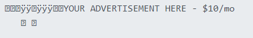
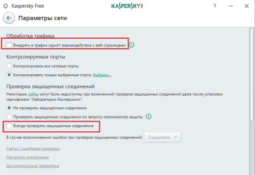
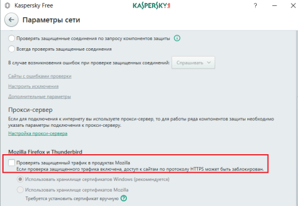
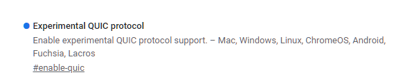
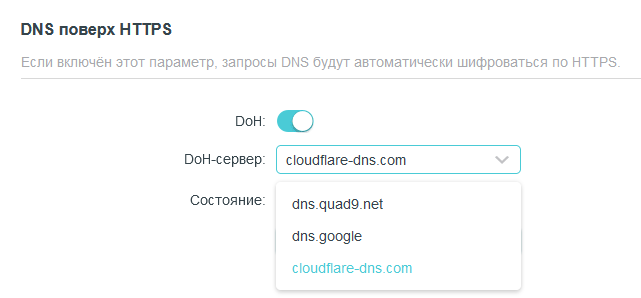

Вижу что все пробуют разные конфигурации программы.
Конкретно у меня начали блокировать wrong-seq, поэтому просто сменил режим с -9 на -7.
KDS: Часть 2 начинается здесь
Стоило полистать не сами темы, а комментарии под ними, как увидел что люди уже об этом говорят.
Извините, если замусорил ветку)
Возможно, автор это увидит и как-то переделает этот запрос в новой версии. У меня без него один сайт не работает, а очень хотелось бы
На zapret уходить не хочется
А у меня ни с какими параметрами так и не заработало. Помогает тупая перезагрузка страницы, причём на одно видео достаточно одного раза, но слегка бесит постоянно это делать.
Да, у меня без фальшивых запросов рутрекер в кашу превратился. Крайне неприятно.
-e2 --reverse-frag не помогло? Без всего остального. В блеклисте можно только googlevideo.com (для видео) и ggpht.com (для аватарок) оставить, остальное вроде не блокируют. Возможно ещё ytimg.com, но это не точно.
А в консоли браузера у вас что, случайно не куча запросов с 403? Тогда это другая проблема, которую отдельно другим способом решать нужно (к примеру, некоторым людям помогло от этого выставить в настройках защищённого DNS в браузере сервер OpenDNS)
Как вариант разделить програму, что бы -7 работало только на GGC (пока не сломают, так что уже сомнительное предложение), а остальное на -9.
По тому что действительно прям очень плохо работает икс, студия ютуба и скорее всего много что ещё. Точно хорошо грузятся простые jpg/png
Случайно да. Почитала, что нужно добавлять все адреса с 403 в hosts. И там же прочитала, что это бессмысленно, если в russia-youtube уже есть googlevideo.com. И смена сервера только что тоже не помогла. Но спасибо, я поняла, пошарюсь по темам ещё.
Неа. У меня вообще такое ощущение, что в моём случае пофиг какие параметры, всё либо будет работать с -9, либо проблема в другом.
Создайте свой блеклист, впишите в него только googlevideo.com и попробуйте подцепить к gdpi только его, а остальные убрать. Скорее всего там какой-нибудь сайт в дефолтном списке, типа googleapis или googleusercontent всё ломает.
Не могли бы вы уточнить, под блеклистом имеется в виду russia-blacklist или russia-youtube? Я так понимаю второе, но у меня и так там только четыре дефолтных строчки - youtube, youtu, googlevideo, ytimb.
Временно удалите от туда все строки, кроме googlevideo.com
Можете просто скопировать куда-то этот файл, чтобы если что вернуть. Или текст скопируйте. Ну это сами решите.
А так если запускаете файл со словом YouTube, то блэклист со словом YouTube и менять. Рекомендую его использовать. Там строк меньше, проще протестить.
Тож не сработало. И я так поняла у меня вообще левая проблема, не связанная с остальными сегодня. Мб чёт временное с серверами. Просто странно, что у меня в то же время всё отвалилось, но по другой причине.
Вы можете подробнее проблему описать? У вас сама страница не грузится? Или страница грузится, но потом видео не хочет воспроизводиться? И после обновления страницы воспроизводится?
Желательно ещё увидеть скриншот f12 - сеть - xhr/fetch
Ну, на данный момент проблема выглядит так - видео не хочет воспроизводиться. После обновления стабильно работает. Иногда нормально воспроизводятся несколько видео подряд, редко не воспроизводится вообще, чаще всего наглухо виснет после ровно 20 секунд. Сам сайт и прочее работают нормально.
P.S. Разумеется, как только я полезла скринить, пришлось перетыкать штук десять видео, прежде чем попасть на то, которое зависнет. Без гугльвидео фильтра и с ним.


P.S. 403 Forbidden тоже появлялся, просто в списки не попал.
Ну это похоже на проблему с тормозящими гугл-кэшами. На моем провайдере (скайнет, спб) такое было. Лечится блокировкой проблемных серверов через ublock/adblock или файл etc/hosts.
Жаль на вашем 2 скрине нет столбца url, чтобы понятно было какие там сервера проблемные.
Те, которые 403 - это вообще отдельный разговор. Никто толком не знает почему там эти ошибки валятся.
У меня та же проблема, перестал работать режим -5, помогло скрещивание режима 1 и 5, строка -5 -p -r -s -n -q
Чисто предположение, что кто-то вытащил из чулана старые железки с пассивными дипиай и воткнул где-то, где не хватало оборудования между нами и гугл-кэшами
Примерно так, только rr меняются от 1 до 18. И я переблокировала через мои фильтры в ublock уже штук 20 серверов, но всё равно валятся проблемные. Я чёт не то делаю?
Попробуйте вот что - уберите на время все ваши блокировки, отключите все расширения с прокси/впн, включите только censor tracker, добавьте в список прокси youtube.com - перезапустите это расширение (выключить/снова включить) - поможет?
Зайдите на https://redirector.googlevideo.com/report_mapping?di=no, там должно быть название вашего кластера гуглвидео. Выглядеть должно, например, как skynet-led2 или rostelekom-abc3.
Потом в командной строке сделайте:
ping r1.названиекластера.googlevideo.com
Так вы определите айпи адрес первого гугл-кэш сервера своего провайдера.
Например, в моем случае это ping r1.skynet-led2.googlevideo.com, который дает айпи 185.37.129.204
Продолжайте:
ping r2.названиекластера.googlevideo.com
ping r3.названиекластера.googlevideo.com
...
пока не перестанет пинговаться. Так вы найдете диапозон айпи ваших гугл-кэш серверов и их количество, в моем случае их 8 штук, с 185.37.129.204 по 185.37.129.211
Теперь открываете видео на ютубе, смотрите в f12/сеть, и там адреса начинающиеся с rr*-- и ищете их айпи через пинг, например:
ping rr3---sn-n3toxu-axql.googlevideo.com
возвращает айпи 185.37.129.206 Это айпи в ранее найденном диапозоне. Значит sn-n3toxu-axql - это и есть кодовое имя моих гугл-кэшей.
Я знаю что их 8 штук, так что я иду в блокировщик рекламы и блочу их вот так:
||rr1---sn-n3toxu-axql.googlevideo.com^$important
||rr2---sn-n3toxu-axql.googlevideo.com^$important
||rr3---sn-n3toxu-axql.googlevideo.com^$important
||rr4---sn-n3toxu-axql.googlevideo.com^$important
||rr5---sn-n3toxu-axql.googlevideo.com^$important
||rr6---sn-n3toxu-axql.googlevideo.com^$important
||rr7---sn-n3toxu-axql.googlevideo.com^$important
||rr8---sn-n3toxu-axql.googlevideo.com^$important
Не факт что это поможет конкретно вам, т.к. ситуации разные бывают.
Не сработало, “Зафиксирован подозрительный трафик”.
Это ютуб такое говорит?
Ссылка не открывается вообще, “Не удаётся получить доступ”.
P.S. Это на сообщение выше с попыткой через цензор трекер. Про трафик.
Ааа
Обычно нужно доказать, что ты не бот (через капчу) и перейти по ссылке на ютуб. У меня так, как у вас не знаю…
Крч, у меня диапазон 4 штуки, от 85.113.32.140 до 143, в юблок вместе с кодовым именем я их засунула, но теперь красные другие адреса, которых в моём диапазоне нет, 75.125.111.251, например. А, и видео вообще перестали грузиться. Ну и ладно, дальше уже лень, да и пока меня не сильно парит перезагружать страницу, зависания вроде пореже происходят. Само пройдёт.
Спасибо большое в любом случае, учту это всё на будущее. И впрочем, всегда буду признательна за советы, куда ещё можно потом попытаться влезть, если не починится. Тут ж уже были подобные темы с похожими проблемами, да?
Были, да.
Если вы заблочили всего 4 сервера и у вас вообще видосы на ютубе больше не грузятся, то скорее всего у вас в принципе запросы на гугл-кэши за ТСПУ не идут. Тут надо брать красные адреса (но которые не с ошибкой 403) и проверять их через курл curl -sv -o NUL https://rr1---blablabla.googlevideo.com, меняя стратегию в gdpi, пока не найдете рабочую. В другой теме большинству помог вариант -e2 --reverse-frag -q. Ну и убедитесь, что случайно не удалили googlevideo.com из блеклиста во время экспериментов ранее.
Ещё, как вариант, прогоните красный адрес через блокчек zapret’a. О том как это сделать тут инфа на форуме есть.
Тут (https://ntc.party/t/подбор-рабочего-конфига-для-ggc-ютуба-через-blockcheck)
Поймите, что вы используете хакерские инструменты. По сути, предполагается, что вы вообще не должны пользоваться ютубом на ростелекоме. Это как-то обошли хитростью, но там встречаются другие подводные камни. Это странная неподдерживаемая зона.
Я видел ошибки 403 ещё в начале лета, до блокировок. Кроме того, у меня ютуб доступен без обхода (только популярные видео), т.к. провайдерские кэши находятся до ТСПУ, однако ошибки 403 всё равно валятся. Ну и, наконец, я не понимаю каким образом разрезание пакета на 2 части может привести к тому, что в запросы начинают подсовываться фейковые ip-адреса, принадлежащие какому-нибудь Амазону или телеграму.
Поэтому я и написал, что ошибки 403 - это отдельный разговор, и никто не знает что с ними делать. Максимум можно заранее заблочить запрос через ublock/adblock, добавив
! [Метод подходит только для статичных ip! Либо используйте маски/RegEx!]
! Блокируем все обращения к googlevideo
||googlevideo.com/videoplayback^
! Разрешаем обращения с правильным ip, т.к. они не вызывают ошибку 403 Forbidden
@@||googlevideo.com/videoplayback*ip=ваш_айпи_адрес*^
Дело в том, что Ori не на Ростелкоме ) Но зато на Ростелекоме я и я вообще никогда таких ошибок не видел, потому что имею правильно настроенный GDPI без модсетов и лишней чепухи из них, на моем провайдере нужных как 5-е колесо телеге.
Так же у меня нет никаких проксирующих-ВПНящих трафик расширений в браузере.
Так же у меня во всех браузерах давно прописан малоизвестный DoH (может это тоже влияет, я не знаю)
У рутрекера же есть собственный плагин для браузеров:
для хромоидов — https://chrome.google.com/webstore/detail/fddjpichkajmnkjhcmpbbjdmmcodnkej
для фаерфокса — РуТрекер - официальный плагин от RuTracker.org – Get this Extension for 🦊 Firefox (en-US)
Один в один, только на мегафоне. Но когда они начали экспериментировать 10 или 11 числа кажется, отвалилось чуть меньше чем все. И doh в том числе. Сейчас пока вернули.
Думаю, GDPI скоро все с такими раскладами. Останутся один запрет и что там еще есть никсоподобное? А жаль - GDPI в настройке очень легкий, с остальными не сравнить
Ну гудбай же тоже можно подкрутить. Я верю в ValdikSS) Конечно, если ему самому это будет интересно. А так - еще есть byedpi в качестве локального прокси, spoofdpi (мне он меньше понравился, там настроек почти ноль). И еще что-то есть, уже не вспомню название.
Да ну? zapret легче, там даже конфиг подбирать не надо, софтина всё сделает за тебя.
К слову, zapret куда быстрее работает. И с ним у меня нет этого странного бага - на gdpi всё работает, но стримы улетают через 30 секунд с непредвиденной ошибкой, а на zapret всё нормально.
У меня и на GDPI с этим все нормально. Да и вообще проблем нет. НО у людей то проблем с ним все больше, а в настройке он лично мне показался сложнее. Я на автоматику предпочитаю не полагаться, но я попробовал - да, вроде работает
Возможно, если запрет раскрутят так же как и гудбай, его методы обхода так же начнут блокировать.
Там нет алгоритма, он просто перебирает подряд все возможные конфиги, по сути, тот же самый ручной подбор, только с гораздо меньшей тратой времени.  Имеет смысл пользоваться для подбора конфигов к gdpi.
Имеет смысл пользоваться для подбора конфигов к gdpi.
Gdpi не блокируют, это невозможно. То, что у многих отвалился метод с кривой контрольной суммой означает лишь то, что они упростили блокировку, отбрасывая кривые пакеты, тем самым разгружая железки ТСПУ.
Да людям уже такое советовали, в итоге никто не смог подобранное перевести в формат GDPI 
И поэтому они фейки блокируют разные? Только подобрали - уже заблокировали)
А кто-то пытался?)
Фейки? Всмысле фейковые пакеты? Так они автоматом блокируются, эта технология настолько деревянная, что нет никакого смысла её использовать.
Ну, я точно пытался. Предложил пару вариантов, чел сказал - не, не пашет. Ну я и бросил это дело
Он говорит про --wrong-seq Мы там переделывали payload взяв его из запретовского типа сберовского. Заблочили через час у меня, например.
Да запросто.
Вот у меня, -wf-l3=ipv4 --wf-tcp=443 --dpi-desync=disorder2. Лезем в гайды смотреть, из чего дизордер состоит. Там буквами по белому написано, что дизордер делит пакет на две части, и отправляет их особым образом, сначала жопа, потом морда, с двумя нулевыми пакетами посредине. В gdpi есть --reverse-frag, а поделить пакет можно через -e2.
Что в этом сложного?
А disorder2 разве шлет фейки? Не disorder?
А disorder2 разве шлет фейки? Не disorder?
disorder2 и split2 не предполагают отсылку фейк пакетов
А. я понял, что смутило. Я написал “фейковые пакеты”, имел ввиду пустые. Упс, очепяточка вышла  Поправил.
Поправил.
Бывает)
А вот такой каламбур как winws --wf-l3=ipv4 --wf-tcp=443 --dpi-desync=fake,disorder2 --dpi-desync-fooling=datanoack ?
Это я себе rezka.ag подкручивал )
В итоге заработал в GDPI микс из вот этого
winws --wf-l3=ipv4 --wf-tcp=443 --dpi-desync=fake,disorder --dpi-desync-ttl=3
!!!!! AVAILABLE !!!!!
- checking winws --wf-l3=ipv4 --wf-tcp=443 --dpi-desync=fake,disorder --dpi-desync-fooling=badseq
–reverse-frag --wrong-seq --set-ttl 3
Тут и дизордер2 и фейк. Gdpi не поддерживает комбинацию методов десинхронизации, точнее поддерживает, но нет возможности управлять последовательностями. Параметр --dpi-desync-fooling=datanoack бесполезен, он не ходит через нат, если я правильно понял гайд. Поэтому у нас останется -e2 --reverse-frag --wrong-seq, но это может не сработать. В общем, погрешность есть, но похожее подбирать можно.
кстати да, set-ttl тоже можно добавить, он идет в блок к fake
Понятно, ну у меня так и получилось -e 2 --reverse-frag --wrong-seq --set-ttl 3
Работает и сам сайт и видосы с него
это на патченом gdpi.exe?
Нет, на обычном. Патченый через час опять забанили.
У меня двойной запуск GDPI - для Россия блэклиста и для Ютуба. Эти параметры для Россия
Кстати, мне тут писали, что блокчек запрета не работает на GGC (об этом, якобы, говорил сам автор запрета) - это правда? Я просто не пробовал
У меня также 2 инстанса раньше работали. А сейчас для запрета хватает --dpi-desync=disorder2 --dpi-desync-split-pos=1 --dpi-desync-any-protocol, казалось бы для гудбая по аналогии должно хватать -e 1 -f 1 --reverse-frag --allow-no-sni, но нет, сайт открывается, но видео не грузится.
Я же говорю, это автобан. Никто там не следит за пакетами и вручную не банит, тспу смотрит проблемные для себя цепочки и просто дропает их. Видимо gdpi создает неуправляемый поток пакетов, который не нравится железке и видимо занимает много процессорного времени.
Конфиг неверный. --dpi-desync=disorder2 --dpi-desync-split-pos=1 --dpi-desync-any-protocol это -e1 --reverse-frag. --dpi-desync-any-protocol можно опустить, нет смысла работать по тому же icmp.
Если я убираю --dpi-desync-any-protocol, то youtube зависает при открытии сайта. Добавляю - все работает.
Значит там квик задействован. В таком случае это нелишнее.
Так нынче же на ютубе не блокируют морду сайта? Можно убрать всё ютубовское, кроме googlevideo и ggpht, из списка блокировок и тогда квик не придется фильтровать.
Ну как сказать. У меня вот замедляется всё, связанное с ютубом. И морда, и видео, и сторонние сервисы. Без обходов сайт открывается с загрузкой в несколько минут. Без понятия с чем это связано, все эти домены (ну кроме гуглвидео) свободны и открыты, скорость до них нормальная. Просто сайт долго думает. На любом браузере.
УПД. Грешу на включенный квик, но мне лень проверять.
Нет, так видео не грузится.
ЕМНИП, он говорил про googlevideo.com, что логично. Для ggc должно работать
У домена googlevideo.com нет корня, он целиком на поддоменах. Так что тыкать нужно соответствующий адрес ggc.
Я понял, что как раз его надо тыкать. Это и хотел узнать, спасибо
У меня сейчас вообще прикол - включил Кайбер в Хроме и Эдже, и ютуб и заблочка работают отлично. Типа, все само починилось?
Так действительно заблокировали wrong-seq? У меня не проявляется, пришлите pcap’ы.
Речь про youtube, или про всё?
Про ютуб, конкретно видео. Интерфейс работает.
Это что-то на линуксовском?
У меня с фейками (любыми) отвалились только ggc провайдера. Зарубежные ggc работают. Другие сайты открываются.
Это наверное дамп трафика в вайршарке…
Только это и вижу. Уже исправил в 0.2.3rc2.
Блокировку wrong-seq не видел (ни на ютубе, ни где-то еще)
Понял.
Да, видимо блочат wrong-seq только на российских GGC.
Кстати, с ключем -p который блочит RST надо быть осторожнее - он ломает плееры на многих заблоченных сайтах с фильмами-сериалами. Например на rezka.ag Видео просто зависает спустя время и все
Видимо плеер пытается отбросить просмотренный кусок с помощью RST, а гудбай ему не дает это сделать
На 0.2.3rc3 с -9 --fake-gen 5 и -5 -e1 -q --fake-gen 5 у меня отваливаются вообще все ggc, и наши и зарубежные.
Пришлите pcap
А у меня наоборот - видео на ютубе без проблем, но отвалилось все с TLS 1.2
Видео в X не грузятся - бесконечно крутится кружок
Вернулся обратно на 2 строчки в батнике
Окей, мои тесты для домена pbs.twimg.com (картинки на твиттере?).
DNS подсовывает 2 айпишника, 151.101.84.159 и 192.229.233.50.
Просто -9 - оба домена курлятся.
Спойлер
C:\Users\1>curl -sv -o NUL https://pbs.twimg.com --resolve pbs.twimg.com:443:192.229.233.50
* Added pbs.twimg.com:443:192.229.233.50 to DNS cache
* Hostname pbs.twimg.com was found in DNS cache
* Trying 192.229.233.50:443...
* Connected to pbs.twimg.com () port 443
* ALPN: curl offers h2,http/1.1
* TLSv1.3 (OUT), TLS handshake, Client hello (1):
} [308 bytes data]
* CAfile: C:\Users\1\AppData\Local\Microsoft\WinGet\Packages\cURL.cURL_Microsoft.Winget.Source_8wekyb3d8bbwe\curl-8.10.0_1-win64-mingw\bin\curl-ca-bundle.crt
* CApath: none
* TLSv1.3 (IN), TLS handshake, Server hello (2):
{ [88 bytes data]
* TLSv1.3 (OUT), TLS handshake, Client hello (1):
} [341 bytes data]
* TLSv1.3 (IN), TLS handshake, Server hello (2):
{ [155 bytes data]
* TLSv1.3 (IN), TLS handshake, Unknown (8):
{ [15 bytes data]
* TLSv1.3 (IN), TLS handshake, Certificate (11):
{ [4875 bytes data]
* TLSv1.3 (IN), TLS handshake, CERT verify (15):
{ [264 bytes data]
* TLSv1.3 (IN), TLS handshake, Finished (20):
{ [52 bytes data]
* TLSv1.3 (OUT), TLS handshake, Finished (20):
} [52 bytes data]
* SSL connection using TLSv1.3 / TLS_AES_256_GCM_SHA384 / [blank] / UNDEF
* ALPN: server accepted h2
* Server certificate:
* subject: C=US; ST=California; L=San Francisco; O=Twitter, Inc.; CN=*.twimg.com
* start date: Jul 8 00:00:00 2024 GMT
* expire date: Jul 7 23:59:59 2025 GMT
* subjectAltName: host "pbs.twimg.com" matched cert's "*.twimg.com"
* issuer: C=US; O=DigiCert Inc; CN=DigiCert Global G2 TLS RSA SHA256 2020 CA1
* SSL certificate verify ok.
* Certificate level 0: Public key type ? (2048/112 Bits/secBits), signed using sha256WithRSAEncryption
* Certificate level 1: Public key type ? (2048/112 Bits/secBits), signed using sha256WithRSAEncryption
* Certificate level 2: Public key type ? (2048/112 Bits/secBits), signed using sha256WithRSAEncryption
* using HTTP/2
* [HTTP/2] [1] OPENED stream for https://pbs.twimg.com/
* [HTTP/2] [1] [:method: GET]
* [HTTP/2] [1] [:scheme: https]
* [HTTP/2] [1] [:authority: pbs.twimg.com]
* [HTTP/2] [1] [:path: /]
* [HTTP/2] [1] [user-agent: curl/8.10.0]
* [HTTP/2] [1] [accept: */*]
> GET / HTTP/2
> Host: pbs.twimg.com
> User-Agent: curl/8.10.0
> Accept: */*
>
* Request completely sent off
< HTTP/2 400
< accept-ranges: bytes
< age: 220
< cache-control: no-cache, no-store, max-age=0
< date: Sun, 15 Sep 2024 00:34:13 GMT
< last-modified: Sun, 15 Sep 2024 00:30:33 GMT
< perf: 7402827104
< server: ECS (ska/F705)
< server-timing: x-cache;desc= 400-HIT,x-tw-cdn;desc=VZ
< strict-transport-security: max-age=631138519
< timing-allow-origin: https://twitter.com, https://mobile.twitter.com
< x-cache: 400-HIT
< x-connection-hash: 5b80e4acb6bcc52c14567b39dd0f43bed926ad3ff42252cd32dd5f6f52c2f0d7
< x-content-type-options: nosniff
< x-response-time: 103
< x-transaction-id: 3901a766fcc948bb
< x-tw-cdn: VZ
< x-tw-cdn: VZ
< x-tw-cdn: VZ
< content-length: 0
<
{ [0 bytes data]
* Connection #0 to host pbs.twimg.com left intact
C:\Users\1>curl -sv -o NUL https://pbs.twimg.com --resolve pbs.twimg.com:443:151.101.84.159
* Added pbs.twimg.com:443:151.101.84.159 to DNS cache
* Hostname pbs.twimg.com was found in DNS cache
* Trying 151.101.84.159:443...
* Connected to pbs.twimg.com () port 443
* ALPN: curl offers h2,http/1.1
* TLSv1.3 (OUT), TLS handshake, Client hello (1):
} [308 bytes data]
* CAfile: C:\Users\1\AppData\Local\Microsoft\WinGet\Packages\cURL.cURL_Microsoft.Winget.Source_8wekyb3d8bbwe\curl-8.10.0_1-win64-mingw\bin\curl-ca-bundle.crt
* CApath: none
* TLSv1.3 (IN), TLS handshake, Server hello (2):
{ [100 bytes data]
* TLSv1.2 (IN), TLS handshake, Certificate (11):
{ [3055 bytes data]
* TLSv1.2 (IN), TLS handshake, Server key exchange (12):
{ [300 bytes data]
* TLSv1.2 (IN), TLS handshake, Server finished (14):
{ [4 bytes data]
* TLSv1.2 (OUT), TLS handshake, Client key exchange (16):
} [37 bytes data]
* TLSv1.2 (OUT), TLS change cipher, Change cipher spec (1):
} [1 bytes data]
* TLSv1.2 (OUT), TLS handshake, Finished (20):
} [16 bytes data]
* TLSv1.2 (IN), TLS change cipher, Change cipher spec (1):
{ [1 bytes data]
* TLSv1.2 (IN), TLS handshake, Finished (20):
{ [16 bytes data]
* SSL connection using TLSv1.2 / ECDHE-RSA-CHACHA20-POLY1305 / [blank] / UNDEF
* ALPN: server accepted h2
* Server certificate:
* subject: C=US; ST=California; L=San Francisco; O=Twitter, Inc.; CN=*.twimg.com
* start date: Jun 24 00:00:00 2024 GMT
* expire date: Jul 25 23:59:59 2025 GMT
* subjectAltName: host "pbs.twimg.com" matched cert's "*.twimg.com"
* issuer: C=US; O=DigiCert Inc; CN=DigiCert Global G2 TLS RSA SHA256 2020 CA1
* SSL certificate verify ok.
* Certificate level 0: Public key type ? (2048/112 Bits/secBits), signed using sha256WithRSAEncryption
* Certificate level 1: Public key type ? (2048/112 Bits/secBits), signed using sha256WithRSAEncryption
* Certificate level 2: Public key type ? (2048/112 Bits/secBits), signed using sha256WithRSAEncryption
* using HTTP/2
* [HTTP/2] [1] OPENED stream for https://pbs.twimg.com/
* [HTTP/2] [1] [:method: GET]
* [HTTP/2] [1] [:scheme: https]
* [HTTP/2] [1] [:authority: pbs.twimg.com]
* [HTTP/2] [1] [:path: /]
* [HTTP/2] [1] [user-agent: curl/8.10.0]
* [HTTP/2] [1] [accept: */*]
> GET / HTTP/2
> Host: pbs.twimg.com
> User-Agent: curl/8.10.0
> Accept: */*
>
* Request completely sent off
< HTTP/2 400
< perf: 7402827104
< cache-control: no-cache, no-store, max-age=0
< x-transaction-id: cce3ba376d4e162c
< timing-allow-origin: https://twitter.com, https://mobile.twitter.com
< strict-transport-security: max-age=631138519
< accept-ranges: bytes
< x-content-type-options: nosniff
< date: Sun, 15 Sep 2024 00:34:15 GMT
< x-cache: MISS, MISS
< x-tw-cdn: FT
< x-served-by: cache-lhr-egll1980068-LHR, cache-bma1666-BMA, cache-tw-ZZZ1
< server-timing: x-cache;desc=MISS, x-tw-cdn;desc=FT
< content-length: 0
<
{ [0 bytes data]
* Connection #0 to host pbs.twimg.com left intact
-9 --fake-gen 5 - один курлится, другой нет. Пролема связана с tls 1.2?
Спойлер
C:\Users\1>curl -sv -o NUL https://pbs.twimg.com --resolve pbs.twimg.com:443:151.101.84.159
* Added pbs.twimg.com:443:151.101.84.159 to DNS cache
* Hostname pbs.twimg.com was found in DNS cache
* Trying 151.101.84.159:443...
* Connected to pbs.twimg.com () port 443
* ALPN: curl offers h2,http/1.1
* TLSv1.3 (OUT), TLS handshake, Client hello (1):
} [308 bytes data]
* CAfile: C:\Users\1\AppData\Local\Microsoft\WinGet\Packages\cURL.cURL_Microsoft.Winget.Source_8wekyb3d8bbwe\curl-8.10.0_1-win64-mingw\bin\curl-ca-bundle.crt
* CApath: none
^C
C:\Users\1>curl -sv -o NUL https://pbs.twimg.com --resolve pbs.twimg.com:443:192.229.233.50
* Added pbs.twimg.com:443:192.229.233.50 to DNS cache
* Hostname pbs.twimg.com was found in DNS cache
* Trying 192.229.233.50:443...
* Connected to pbs.twimg.com () port 443
* ALPN: curl offers h2,http/1.1
* TLSv1.3 (OUT), TLS handshake, Client hello (1):
} [308 bytes data]
* CAfile: C:\Users\1\AppData\Local\Microsoft\WinGet\Packages\cURL.cURL_Microsoft.Winget.Source_8wekyb3d8bbwe\curl-8.10.0_1-win64-mingw\bin\curl-ca-bundle.crt
* CApath: none
* TLSv1.3 (IN), TLS handshake, Server hello (2):
{ [88 bytes data]
* TLSv1.3 (OUT), TLS handshake, Client hello (1):
} [341 bytes data]
* TLSv1.3 (IN), TLS handshake, Server hello (2):
{ [155 bytes data]
* TLSv1.3 (IN), TLS handshake, Unknown (8):
{ [15 bytes data]
* TLSv1.3 (IN), TLS handshake, Certificate (11):
{ [4875 bytes data]
* TLSv1.3 (IN), TLS handshake, CERT verify (15):
{ [264 bytes data]
* TLSv1.3 (IN), TLS handshake, Finished (20):
{ [52 bytes data]
* TLSv1.3 (OUT), TLS handshake, Finished (20):
} [52 bytes data]
* SSL connection using TLSv1.3 / TLS_AES_256_GCM_SHA384 / [blank] / UNDEF
* ALPN: server accepted h2
* Server certificate:
* subject: C=US; ST=California; L=San Francisco; O=Twitter, Inc.; CN=*.twimg.com
* start date: Jul 8 00:00:00 2024 GMT
* expire date: Jul 7 23:59:59 2025 GMT
* subjectAltName: host "pbs.twimg.com" matched cert's "*.twimg.com"
* issuer: C=US; O=DigiCert Inc; CN=DigiCert Global G2 TLS RSA SHA256 2020 CA1
* SSL certificate verify ok.
* Certificate level 0: Public key type ? (2048/112 Bits/secBits), signed using sha256WithRSAEncryption
* Certificate level 1: Public key type ? (2048/112 Bits/secBits), signed using sha256WithRSAEncryption
* Certificate level 2: Public key type ? (2048/112 Bits/secBits), signed using sha256WithRSAEncryption
* using HTTP/2
* [HTTP/2] [1] OPENED stream for https://pbs.twimg.com/
* [HTTP/2] [1] [:method: GET]
* [HTTP/2] [1] [:scheme: https]
* [HTTP/2] [1] [:authority: pbs.twimg.com]
* [HTTP/2] [1] [:path: /]
* [HTTP/2] [1] [user-agent: curl/8.10.0]
* [HTTP/2] [1] [accept: */*]
> GET / HTTP/2
> Host: pbs.twimg.com
> User-Agent: curl/8.10.0
> Accept: */*
>
* Request completely sent off
< HTTP/2 400
< accept-ranges: bytes
< age: 124
< cache-control: no-cache, no-store, max-age=0
< date: Sun, 15 Sep 2024 00:32:37 GMT
< last-modified: Sun, 15 Sep 2024 00:30:33 GMT
< perf: 7402827104
< server: ECS (ska/F705)
< server-timing: x-cache;desc= 400-HIT,x-tw-cdn;desc=VZ
< strict-transport-security: max-age=631138519
< timing-allow-origin: https://twitter.com, https://mobile.twitter.com
< x-cache: 400-HIT
< x-connection-hash: 5b80e4acb6bcc52c14567b39dd0f43bed926ad3ff42252cd32dd5f6f52c2f0d7
< x-content-type-options: nosniff
< x-response-time: 103
< x-transaction-id: 3901a766fcc948bb
< x-tw-cdn: VZ
< x-tw-cdn: VZ
< x-tw-cdn: VZ
< content-length: 0
<
{ [0 bytes data]
* Connection #0 to host pbs.twimg.com left intact
Если подсунуть свой собственный фейк, то все работает (в т.ч. заблокированные ggc гуглвидео, т.к. брал от смежного домена). Тестил с пейлоадом от google earth, браузер лиса 130, квик и кибер выключены.
Спойлер
16030102930100028f030321379e6a640c0a8c2d079d9b7e0a4dcb3f484e05b88874405424107065be8921207bb250ba1e2a34c0edf4912caab401cc0b53a1a65ee65a9aee122292f7b53e5f0022130113031302c02bc02fcca9cca8c02cc030c00ac009c013c014009c009d002f00350100022400000015001300001065617274682e676f6f676c652e636f6d00170000ff01000100000a000e000c001d00170018001901000101000b00020100002300000010000e000c02683208687474702f312e310005000501000000000022000a000804030503060302030033006b0069001d00206ca38c787a687fff8caf55f3e5c6c070a4d895cea3deb34eed93bd26ba5860350017004104fe86e390f8f303d79d1bb58d3b81bd09ee29f7ad3efa7604bfcc87ffdab29d2527e7fdbaf2c47821e43435851c437de6ea66e7cb0e5343375081072fc7f71352002b00050403040303000d0018001604030503060308040805080604010501060102030201002d00020101001c00024001fe0d011900000100037f0020dab8fde49aad0c43473c588105e9ede434d4cc55df0d5309b2e6271db02e305f00ef83bcf7d0a8b5c7b3dbbd68bd450ff3de7f99807faa6c5d67d68ae10dd361d358385d6fdc4dba5aa5b55de185828c2e7bd53c99795289cddba4107f61a6dd24fdd94bae35908a0410734e0bb8ade5a96103696d200533290c33501e114206f323537c91f6e701f03b9487c28d33d89f82a3b2600963c6d6bd6e7e8cdc5d29d8add9b60097addedeaebfe35633d99205ef8b85293be99ffb7d75cb088012009aa51529d0c0cafb6ccfc5e4e84fb9c8581b75dce0465f2d4688a54ae2cc7146902cccd5d544e1afffcbb6748a168c7fc80364b4255c35843c22768e8f2b8dc75744b1b0f52a4682e5e537a2a9e82ee99a
-e2 --reverse-frag --wrong-seq в итоге использую. С wrong-chksum ломаются многие сайты. С -e1 тоже.
С --wrong-seq --fake-gen 5 отвалились заблокированные сайты с TLS 1.2
Просто с --wrong-seq все работает. Пробовал всякие опции вместо - fake-from-hex, увеличивал fake-resend ничего не помогает.
Дамп прилагаю
rezka_ag_tls12.pcapng (15,9 КБ)
Вставьте что-нибудь дебильное, какая-то коробка по пути следования проверяет наличие домена в ClientHello.
--fake-gen 5 --fake-from-hex 160301FFFF01FFFFFF0303594F5552204144564552544953454D454E542048455245202D202431302F6D6F000000000009000000050003000000
Твиттер использует два типа серверов для контента - от edgecast и fastly. Попробуйте оба ByeDPI for NekoBox - #75 by meadow_seed
и пустые disorder2 не шлет, читайте внимательно, то что вы описали про жопа-пустой-голова-пустой - это disorder без 2-ки
Благодарю, все заработало. И ютуб и резка и видео на Х. Вопрос - надолго ли? Народ уже это значение HEX по всему инету растащил, думаю его бан - лишь вопрос времени
Так речь и шла про disorder. Читайте всю ветку постов.
Ну изменишь пакет на другую хрень.
Я ржу, откуда Валдик вытащил hex

Вдруг на той стороне кто захочет посмотреть пакет, весьма удивится 
я прочитал ваш пост, там disorder2
их 2 дисордера
disorder и disorder2
я не к тому, что придираюсь, сложилось ощущение, что вы не поняли, что их 2
в первом есть фейк пакеты с пустыми данными, а во втором их нет, только обратная фрагментация
Еще актуально? 1_russia_blacklist_YOUTUBE.pcap (2,6 МБ)
На самом деле все ggc не отваливаются, поспешный вывод, просто на новых длинных видео бывают паузы по несколько минут.
Я в курсе что их два.
Ну, вроде, всё в порядке в вашем дампе, соединение есть, данные передаются.
Поначалу в логе браузера все соединения с нашими и зарубежными ggc красные. Через несколько минут один из локальных ggc начинает отвечать, видео оживает. С goodbyedpi.exe -e2 такого нет, т.к. зарубежные ggc доступны. Но возможно это мой частный случай. Просто буду использовать -e2
-6 сегодня (как обычно в 0:00 по Москве) тоже перестал работать.
Ну, кто пресетами пользуется, у того отлетает.
Уже давно все связанное с TCP очередями рискованно использовать, это слишком палевно.
После блокировки wrong-seq перестал работать и у меня Youtube. Покопался с настройками и Youtube заработал, настройки на скрине ниже

С этими настройками перестали работать часть заблокированных сайтов. Чтобы вернуть работу таким сайтам, надо включить wrong-seq или включить отправку фейков HTTP/HTTPS в значении 5 или включить авто-определение TTL. Однако с такими настроками Youtube перестаёт работать (работать начинает если включить отправку фейков HTTP/HTTPS в значении 2). То есть надо постоянно менять настройки, либо Youtube либо остальное.
Можно как то всё совместить ? Проблема думаю в TTL, только почему авто-определение TTL ломает Youtube (в первый день блокировки wrong-seq, автопределение помогало работать всем сайтам).
Скачай блокчек запрета, посмотри варианты и перенеси в gdpi.
То что у тебя это -e 2 -f 2 --reverse-frag. Этот конфиг работает уже давно.
Это к автору лаунчера, на обычной GDPI все давно работает с выходом новой версии
Заработала отлично с настройками 1_russia_blacklist_YOUTUBE_ALT
С 1_russia_blacklist_YOUTUBE тоже можно сказать работало, но некоторые сайты давали ошибку
Код ошибки: SSL_ERROR_PROTOCOL_VERSION_ALERT
Страница, которую вы пытаетесь просмотреть, не может быть отображена, так как достоверность полученных данных не может быть проверена.
Пожалуйста, свяжитесь с владельцами веб-сайта и сообщите им об этой проблеме.
Этот веб-сайт может не поддерживать протокол TLS 1.2 — минимальную версию, поддерживаемую Firefox.
Все верно, -9 из просто YOUTUBE содержит в себе --wrong-chksum который ломает некоторые сайты
В ALT используется -5 там нет этого параметра
Не совсем по теме вопрос, а почему не хотелось бы уходить на zapret?
Пытаюсь завести дискорд, но с gdpi войс всё равно не конектик, думал попробовать zapret. По Вашей рекомендации, кстати  (см. скриншот)
(см. скриншот)
Тем не менее хотел бы узнать причиноследственные мысли, почему zapret не желательный вариант 

Прошу прощение, совет перейти на zapret был не от Вас 
Тем не менее хотел бы услышать мысли по поводу почему не zapret.
Наверное потому, что он тоже не поддерживает UDP ) И вообще кто вам войс перекрыл, что вы ищите какие-то способы это обойти?
Час назад у меня всё резко перестало работать. До этого GDPI с -e2 --reverse-frag работал как часы, а теперь никакие варианты настроек ничего не делают. С dns, без dns. NS_BINDING_ABORTED везде и всё тут. Пробовал добавлять кэш сервера в uBlock, как Ori тут где-то предлагал - тоже никакой разницы.
Провайдер маленький, местный (Квант). Есть ли какие-то идеи или меня завернули на сквид и теперь труба?
Вам в тему по ошибке 403, если --native-frag вместо --reverse-frag не поможет
А дефолтный вариант у вас не работает? Типа такого, или с --native-frag вместо --reverse-frag.
-e2 -f2 --reverse-frag --wrong-seq --fake-gen 5 --fake-from-hex 160301FFFF01FFFFFF0303594F5552204144564552544953454D454E542048455245202D202431302F6D6F000000000009000000050003000000
Блокировки серверов через ublock - это только для случаев типа моего, когда видео с сервера тянется, но медленно. От провайдерских блокировок это не помогает. Только от ситуаций когда при перемотке видосов заметны паузы по 5-10 секунд.
С --fake-gen 5 --fake-from-hex
160301FFFF01FFFFFF0303594F5552204144564552544953454D454E542048455245202D202431302F6D6F000000000009000000050003000000 - у меня вообще GDPI не запускается (моргнёт и пропадает). С --native-frag -e2 -f2 --reverse-frag --wrong-seq - всеми вместе или в любой комбинации - никакого эффекта. NS_BINDING_ABORTED.
У вас обновлённая версия? https://github.com/ValdikSS/GoodbyeDPI/releases
Эти параметры только недавно добавили.
Была необновлённая. Хотя я вроде бы брал последнюю из Action (Debug log · ValdikSS/GoodbyeDPI@1200e0a · GitHub). На новой версии (0.2.3rc3-2), с вашими параметрами (–fake-gen 5 --fake-from-hex) всё заработало. Спасибо!
У меня перестало работать
МГТС
Работал -7
-e 2 -f 1 --reverse-frag не работает. Раньше работал, но хуже чем -7
Сейчас пытаюсь вставлять то что вы пишете, но максимальный результат это сайт открывается но не грузит видео
Я читаю ваши сообщения и половины того что вы пишете совсем не понимаю, так как совсем не айтишник
Лапы опускаются, за что всё это свалилось?
Грустно, приходится пока через ВПН
И не будет. Надо менять на -e 2 -f 1 --native-frag
Если это не сработает - скачать новую версию если еще не обновились и это -6 --fake-gen 2
P.S. Чтобы поменять пару цифр в CMD файлах айтишником быть и не надо. Не усложняйте сложности )
Менять то в CMD я меняю, потому что действительно айтишником для этого быть не надо, я ведь так и написал, что перебираю ваши параметры вслепую
Но я при этом совсем не понимаю что они значат
Спасибо про новую версию, она заработала (пока), я её совсем не заметил, так как качал с главной страницы, а на ней старая
Смотри возможные варианты через blockcheck, утилиту из состава zapret. Скорее всего, как и у многих, сегодня disorder превратился в split.
У меня внезапно снова начались NS_BINDING_ABORTED на всех googlevideo. Причём оно вначале минут 5 везде было NS_BINDING_ABORTED, потом вдруг перестало на пару минут и видео грузились, а сейчас опять началось (немного иронично, что оба раза оно начиналось, когда пытался смотреть видео “I tried Linux for a week, it was terrible but amazing”). Всё остальное работает. Только googlevideo не проходит. Использую те же параметры, что и до этого (-e2 -f2 --reverse-frag --wrong-seq --fake-gen 5 --fake-from-hex 160301FFFF01FFFFFF0303594F5552204144564552544953454D454E542048455245202D202431302F6D6F000000000009000000050003000000). Для чистоты эксперимента попробовал открыть в приватном окне (где все аддоны выключены) - тот же результат.
Конкретно для ютуба вроде работает обычное -e2 --reverse-frag или -e2 --native-frag.
Если не сработает, можете попробовать вариант с фейком, но с другим. Убираете --fake-gen, а в --fake-from-hex подсовываете, например это:
16030301350100013103032474dd8b0f4622fa939cc131c29409fc141b2a0f2d579a1b1e3cdda47c690a0e20fd0b60a7f3fba08a064785815631a331ff7255926bb69a112043955e79de3749005c130213031301c030c02cc028c024c014c00a009f006b0039cca9cca8ccaa00c40088009d003d003500c00084c02fc02bc027c023c013c009009e0067003300be0045009c003c002f00ba0041c011c0070005c012c0080016000a00ff0100008c003300260024001d00208e51b6abf5494f4a2a4465610bb695b8dd5d4a7178dcc2604951c303776a770b002b00050403040303000a000a0008001d001700180019000b0002010000000013001100000e7777772e676f6f676c652e636f6d0010000e000c02683208687474702f312e31000d0018001608060601060308050501050308040401040302010203
Или это
16030301370100013303038744d596d5e166b59b26a220fd6b02290b1c4ab52fdd065686d3c554eeeec80e202e64ac10ffb2410d07f605bdb7ff47f94b7280a30c215ab8ba1924a29b104a15005c130213031301c030c02cc028c024c014c00a009f006b0039cca9cca8ccaa00c40088009d003d003500c00084c02fc02bc027c023c013c009009e0067003300be0045009c003c002f00ba0041c011c0070005c012c0080016000a00ff0100008e000d0018001608060601060308050501050308040401040302010203002b00050403040303003300260024001d0020c5dfc61b4b53a1eb0441db0077c51d3ee7a127ad4a007fc96ff62cbcd94a9231000a000a0008001d00170018001900000015001300001065617274682e676f6f676c652e636f6d000b000201000010000e000c02683208687474702f312e31
Не помогло.
А вариант, который там выше советовали? -6 --fake-gen 2
Тоже никакой реакции.
На почве того, что вы в другой теме написали, вы точно уверены что у вас какого-то системного прокси нет? Просто это странно что вас такая проблема преследует, с мигающим окошком логин/пароль.
Спойлер
Попробуйте сделать диагностику неполадок для сетевого подключения, средствами виндоус. Мб опять починится…
Диагностика ничего не дала.
Насчёт прокси. Я сейчас на старом ноуте с седьмой виндой, так что могу только показать реестр.

Попробуйте лису и там поставить “без прокси” в настройках. Как через реестр правильно отключить я хз.

“Без прокси” в фоксе по-моему решило проблему, что я упомянул в другой теме. Однако, googlevideo всё ещё не проходит.
И возможно я не один с такой проблемой, но ту тему скоропостижно закрыли. Закрыли, возможно из-за того, что у человека была не самая последняя версия. У меня, кстати, 0.2.3rc3-2. Вроде бы самая последняя на сегодняшний день.
Кстати, попробовал ради интереса 1_russia_blacklist_YOUTUBE.cmd и 1_russia_blacklist_YOUTUBE_ALT.cmd. Эффекта не дало.
Фиг знает тогда, максимум могу порекомендовать возможное решение через zapret. Отсюда и ниже.
Мб на вин7 всё это не очень работает, не знаю.
Я уже безуспешно пытался разобраться в zapret-е, и мне по-моему проще на впн раскошелиться (и надеяться, что сам впн не заблочат).
Ну, дело хозяйское.
Однако, вам стоит знать, что большинство ВПН-протоколов заблокированы. Вам придется искать способы обфускации вашего подключения. Так что это тоже вариант не совсем “из коробки”.
PS: в вин7, скорее всего, наличие прокси можно проверить тут
панель управления → свойства браузера

Ну, прокси у меня точно отключены. В реестре ProxyEnable=0. Не думаю что в других местах будет более точная инормация. И если бы дело было в прокси, то наверное бы не только googlevideo не проходило бы, и наверное было бы что-то кроме ns_binding_aborted.
Насчёт рабочего варианта впн - hidemyname vpn сейчас попробовал взять на тестовые 24 часа. Работает. Если GDPI так и не сможет googlevideo пропускать, значит мне туда дорога.
А если в cmd между exe и --blacklist вписать вот такое -6 -s --fake-gen 2 ?
Естественно с sc stop windivert из-под админа и перезапуском браузера
Вписал, windivert остановил, браузер перезапустил.
Результат - те же, там же. Всё остальное - работает. Googlevideo - ns_binding_aborted.
Ясно. ( Да как они, блин, это делают? Жалко что в Хроме нет возможности проверить, не пресловутая ли там 403? Или она как-то по другому в лисе показывается, не как NS_BINDING…?
Попробуй добавить флаги -r -s -m . Также отключить все блокировщики рекламы Типа адблок
В лисе вот так

Есть столбец “статус”, и там появляются 403, если они есть, но в строках с ns_binding_aborted - нет никакого статуса. Просто пустота.
Только что, ради нашего общего интереса, попробовал добавить. И не просто отключил адблок, а запустил в приватном окне, без всех аддонов. Результат - ns_binding_aborted.
А если попробовать побомбить --fake-resend начиная с 2 и увеличивая на 1 с остановом виндиверта и перезапуском браузера перед каждым увеличением?
Чтобы уточнить - строка вот такая будет, да?
goodbyedpi.exe -6 -s --fake-gen 2 --fake-resend 2 --blacklist …\russia-blacklist.txt --blacklist …\russia-youtube.txt
И увеличивать fake-resend… до скольких?
-w --frag-by-sni ради эксперимента
-6 лучше убрать да бы исключить другие параметры
Да, так. Пока не заработает (ну или не заработает) - тут уж как повезет. Думаю, при 10 можно будет остановиться, если не поможет, но у кого-то вообще 13 там видел )))
-w то зачем?
Не надо ничего исключать пока
-6 -f 2 -e 2 --wrong-seq --reverse-frag --max-payload
Потому что она пропиши ему эти параметры
И что в них плохого? Единственное, что может придется реверс на натив сменить, но это потом, когда реверс весь проверим
Ну окей играйтесь
Дошёл до --fake-resend 6, и возможно эксперимент можно заканчивать, так как всё ещё ns_binding_aborted. Единственная разница - с увеличением fake-resend увеличивается время до появления ns_binding_aborted в логе.
Кстати, native-frag для меня никогда не работал. Не только для googlevideo, но впринципе.
Тогда только блокчеком фигачить, может чего найдет и удастся перевести это в формат GDPI
@PirateSkull Ваш выход, советуйте
Интересно если просто оставить -e1 403 будет? Далее добавлять параметры
П.с. блин точно блок чек совсем про него забыл.
Есть ещё одна супер стратегия пробывать от -1 до -8 по очереди но это такое.
Вижу парочку 403 на googlevideo то тут, то там. Но где-то половина googlevideo всё ещё получают ns_binding_aborted
Да тогда блокчек. Идеи кончаются. Или днс менять doh и прочие фокусы со сменой днс
Может все-таки запрет попробуете? Это так можно долго сидеть гадать. Через запрет проще тестить.
Если мне его кто-нибудь даст. Я на ихнем гитхабе даже не смог найти где его скачать. В релизах пусто.
https://github.com/bol-van/zapret-win-bundle/archive/refs/heads/master.zip
Не знаю имеет ли это значение, но у меня днс уже изменён на 1.1.1.1
Да тут вряд ли в днс проблема. Там видны на скрине ошибки с таймаутом, т.е. там хэндшейк блочится, видимо. Если бы в днс проблема была, там бы была ошибка типа DNS_PROBE_FINISHED_NXDOMAIN или что-нибудь типа того.
Ок значит мимо
Это еще что, вы потом еще по папкам будете 10 минут блуждать, пока найдете нужный CMD 
Шучу. Там главное будет задать правильный начальный конфиг для проверки, чтобы это на час не затянулось
К слову - Cloudflare DNS не лучшее решение в сегодняшних реалиях, как и гугл
На удивление 8-ерки от Гугла у меня пока робят
Кстати, об этом. Пока что попробую preset_russia, но если кто-то хочет дать мне что-то конкретное попробовать - дерзайте.
А это нормально, что окно моргнёт и исчезнет?
Стартуй конечно. Была не была все в восторге от этого пресета болван делает вещи
А вот это уже странно
А значек с 2-мя поднятыми руками на панели задач есть?
А то тут во флуде пишут, что запрет на старых 7-ках, где отлично работает GDPI не пашет, как раз с такими симптомами (
О. Есть. Не заметил. Только он со сломанным замком, а не руками.
Можете мой вариант попробовать: Zapret: обсуждение - #788 by newb1e, только все хостлисты убрать, кроме autohostlist.
Вы от администратора запускаете?
Нет, так происходит, если в конфиге ошибка.
Делайте по этой инструкции
Запустился запрет в итоге? Как результат?
Запустился. Результат пока что тот же. Всё работает, кроме googlevideo. Ns_binding, как говорится, aborted.
Пробовал russia-preset. Пробовал то что newb1e кинул. Эффект одинаковый.
У меня блокчек очень странные результаты для GGC выдает. Разные итоговые варианты для разных серверов, при двух попытках множество вариантов, которые работают только в одной попытке из двух. Поэтому именно для ютуба его использовать не лучший вариант, кмк.
Я уже Тестеру говорил, что там не везде надо жать энтер, надо задать конкретные параметры проверки - не проверять TLS 1.2, например ибо GGC работают на 1.3
А что это за мифический блокчек, который тут люди упоминают, как последнюю надежду?
Закройте запрет, запустите _cmd_admin_ в папке где он находится, напишите там:
winws --wf-tcp=443 --dpi-desync=split2 --dpi-desync-split-seqovl=1
Потом попробуйте ютуб. Если не сработает, остановите виндиверт нажав ctrl+C в консоли
Из моего надо мои хостлисты удалить, у Вас этих файлов нет.
Попробовал. Не заработало. Остановил.
Это файл из папки blockcheck внутри архива Zapret blockcheck.cmd называется. Его запускаете, вписываете туда ваши rr******.googlevideo.com (любой) и отвечаете на несколько вопросов
Скрипт начинает перебирать стратегии, находит нужную и выдает вам. Вы ее вписываете в другой CMD, запускаете и наслаждаетесь ютубом
Я бы посетовал на вин7, но самое странное, что на один день - всё работало идеально.
Чтож, попробую блокчек.
А подскажите это во всех браузерах происходит? Или вы тестируете только в chrome
А тестировал и в хроме, и в фоксе. Не каждый раз в обоих, но периодически пробую, и видео не воспроизводится в обоих.
Желательно для теста страницу с видео через ctrl+F5 обновлять, кстати. Или вообще браузер перезапускать. Curl на вин7, наверное, отсутствует…
На вопрос проверять ли TLS 1.2 отвечаете Нет, на TLS 1.3 - Да, на квик тоже Да
Проверять 1 раз, тип проверки 2
Вписывать гуглкэш в таком формате rr3---sn-gvnuxaxjvh-wv3e.googlevideo.com Безо всяких https и прочего. И да, проверять HTTP - тоже Нет
Возможно, что-то такое заведется если сплит не заработал
winws --wf-tcp=443 --dpi-desync=fake,disorder2 --dpi-desync-fake-tls="tls_clienthello_www_google_com.bin" --dpi-desync-fooling=md5sig
Только надо бинарник с фейком перетащить и кинуть рядом в той же папке.
Но бывает, что блокчек что-то для TLS1.2 находит
Спойлер
- SUMMARY
ipv4 rr13---sn-axq7sn7s.googlevideo.com curl_test_http : working without bypass
ipv4 rr13---sn-axq7sn7s.googlevideo.com curl_test_https_tls12 : winws --wf-l3=ipv4 --wf-tcp=443 --dpi-desync=fake --dpi-desync-ttl=6 --dpi-desync-fake-tls=0x00000000
ipv4 rr13---sn-axq7sn7s.googlevideo.com curl_test_https_tls13 : winws --wf-l3=ipv4 --wf-tcp=443 --dpi-desync=fake --dpi-desync-ttl=3
ipv4 rr13---sn-axq7sn7s.googlevideo.com curl_test_http3 : winws not working
Запустил блокчек на rr1---sn-4axm-n8vs.googlevideo.com. Пока что пишет много unavailable code=28.
Это долгий процесс. Убедитесь что вы там файрволом не закрыли доступ.
А какую рабочую стратегию вам запрет выдал в итоге?
Это нормально. Значит эта стратегия не работает, ищем следующую. Как увидите !!!AVALIABLE!!! - это оно, это работает
Парни а напомните команду curl прозвонить googlevideo на скачивание
Все нашел
curl -4 -o NUL -k --connect-to ::speedtest.selectel.ru https://rr4---sn-q4fl6nz7.googlevideo.com/50MB -w %{speed_download}
Почитайте плс ответ bolvan Подбор рабочего конфига для GGC ютуба через blockcheck - #23 by bolvan
tls 1.2 - более тяжелый случай. Можно сказать гиря 50 кг.
tls 1.3 - гиря 20 кг
кто поднимет 50, с 20 точно справится
tls 1.3 имеет смысл искать только если нет ничего хорошего для tls 1.2
поднять 50 не осиливаем, так хотя бы 20. лучше, чем ничего
Можно в принципе попросить valdikSS дать права на правку гайда, у меня их нет.
Понял, принял. Но, имхо, лучше бить прямо в цель, хоть и гирей в 20 кг )
Да я не против) Сейчас попрошу у командира прав
curl -o NUL -k --connect-to ::speedtest.selectel.ru "https://blablabla/100MB"
Имей в виду что он не проверяет скорость до серверов гуглвидео. Он проверяет скорость до серверов селектеля, однако подсовывая при этом SNI гуглвидео, что заставляет активизироваться черный ящик роскомпозора. Так что это не особо объективный тест.
Точно. А есть тоже самое только от себя . Ну типо без селект тела.
Может через yt-dlp проверить?
Блокчек закончил свои дела. Запускал с параметрами, что KDS советова (без tls 1.2). Результат:
- SUMMARY
ipv4 rr1---sn-4axm-n8vs.googlevideo.com curl_test_http : working without bypass
ipv4 rr1---sn-4axm-n8vs.googlevideo.com curl_test_https_tls13 : winws not working
ipv4 rr1---sn-4axm-n8vs.googlevideo.com curl_test_http3 : winws not working
Что это всё значит - я без понятия. Если в логах ещё что-то полезное есть, чтобы скопировать - говорите.
Без понятия. Через yt-dlp.
Можно некоторые базовые цифры вот так ещё оценить:
curl -4so NUL -w "Lookup time:\t%{time_namelookup}\nConnect time:\t%{time_connect}\nAppCon time:\t%{time_appconnect}\nRedirect time:\t%{time_redirect}\nPreXfer time:\t%{time_pretransfer}\nStartXfer time:\t%{time_starttransfer}\n\nTotal time:\t%{time_total}\n" https://rr4---sn-q4fl6nz7.googlevideo.com
Это значит что он ничего не нашел. Такого не бывает… Вы точно уверены что у вас файрвол/антивирус/какое-то прокси не блочит доступ? Это всё очень странно. То у вас там окна с логином/паролем вылезают, теперь это.
Это прога какая то? Я про такую не слышал. Кстати есть прикольный тест. Берём ссылку от видео тащим в save from он выдает видео. Но прикол в том что видео начнет качаться только с запущенным gdpi. Я думаю этот тест ему надо попробывать @Yoksven
Касперского я выключил, но не сразу, а когда он начал часто жаловаться. Может быть он что-то там успел позакрывать. Могу прогнать тест ещё раз.
У вас 7-ка? Если да - замените файлы WinDivert.dll и WinDivert64.sys в папке с zapret файлами из папки с gdpi . Иначе драйвер виндиверта просто не стартует на запрете
А вы не думали что у вас касперский мог блочить gdpi?
Ну да, консольная утилита по скачиванию видео со множества сайтов, очень крутая. Форк от youtube-dl. Неужели не использовали?
Понял. Сделаю.
Не думал, потому что я в касперском прописал исключения для windivert. А на gdpi он никогда и не жаловался. И если проблема в касперском, то странно было бы, что всё работает, кроме googlevideo.
Не знал. Посмотрю позже.
Проще весь файл лога скинуть, он рядом с CMD создается. Старый удалите, перед тем как новый прогон будете делать, с рабочим WinDivert
Вообще не понятно куда копать. Толи не срабатывает gdpi то ли ggc в бане. Попробуйте другую запрещенку. Запустить мордукнигу инсту или Твиттер. У меня подозрение что gdpi вообще у вас не работает.
Сейчас прогоняю блокчек ещё раз. С заменённым windivert и tls 1.2.
А запрет умеет проверять наличие уже загруженного WinDivert? Может проще GDPI запустить и закрыть, WinDivert останется же
Я ggc с его скринов тестил, у меня они обычным split2 достаются. Даже по http3-only. Причем это direct allocation сервера были, а не провайдерские. Хз. Мне кажется маловероятным что там так жестко накрутили коробку РКНовцы, что даже запрет не пробивает.
Больше похоже на какие-то остатки от прокси или чего-то такого, учитывая историю со странными сообщениями в браузере.
Вот это не скажу, надо смотреть скрипт блокчека. Мне кажется, он запускает из определенной папки
upd у меня не очень с башем, кто понимает?
WINWS=${WINWS:-${ZAPRET_BASE}/nfq/winws}
CYGWIN*)
UNAME=CYGWIN
PKTWS="$WINWS"
PKTWSD=winws
FWTYPE=windivert
;;
*)
Да кто спорит. Что у вас все работает . Я про то что у человека просто проблема с windivert и gdpi просто не работает. Вот что нужно понять
Ну вы сказали что ggc в бане. А они не в бане. Ладно, проехали.
Ага, которую я искал полчаса среди этого линуксового нагромождения ))) Тем более я в линуксовых башах плохо разбираюсь, чтобы это проверить. Ну ладно, проехали тогда, это сейчас не так важно
Я понял что для вас они не в бане выже с человеком в разных городах. Может его провайдер забанил ggc а ваш такими вещами не занимается
Блокировка может быть либо по айпи, либо по sni. Если бы была блокировка по айпи, у него бы соединение вообще не проходило, а там видны на скрине ошибки с таймаутом. Это значит соединение проходит но висит на хэндшейке. А если это блокировка по sni, то для их пробития запрет/гудбай и предназначены. Как вы себе “бан ggc” представляете иначе? Если бы всё было так просто, РКН бы давно у всех забанило все сервера и дело с концом.
Бывают, конечно, совсем экзотические случаи блокировок. Но это чаще к международным блокировкам относится, насколько мне известно. А не так что он с сервером в одном городе, а достать до этого сервера не может.
Ну либо сам сервер его забанил. Но я не думаю что он гугл как-то обидеть мог.
Потом попробуйте другую запрещенку воробья мордукнигу нельзяграм. Для проверки
Кстати, поиск по папкам показывает, что для блокчека там свой виндиверт, а для собственно запрета - свой. Прикольно, конечно, только вот зачем?
Они ничем не отличаются
Ок не кричите. Думал что 403 может это и есть бан по ip. Значит windivert барахлит.
Возможно из-за пути к программе. Мб какие-то сложности с запуском из cygwin
Так у него там не 403, а таймауты обычные. А нс_биндинг_абортед это просто ошибка на стороне клиента.
Я всё еще думаю что у автора какая-то хрень на компе малину портит. Вы видили его предыдущую тему? Там явно что-то странное, какие-то остатки от прокси или хз чего.
Может вообще вирус. Я бы не удивился. Впрочем у него есть касперский, это уже, считай, вирус.
Кстати да) Где-то даже писали в сети, что при отключении каспера ютуб оживал
Ок Значит пусть решает вопрос с операционной. А то Мы тут голову ломаем.
Кстати, интересно. На Win 11 заменил WinDivert запрета на тот, что в GDPI - в итоге ничего вообще не работает, проверка блокчека отваливается с ошибкой на этапе проверки хоста.
Это если вдруг кто поэкспериментировать захочет 
И кстати GGC которые в браузере отлично работают по QUIC блокчек шлют нахер и не признаются, что умеют в QUIC
А я вот тут что подумал, блокчек же curl использует, не? А в win7 курла вроде нет. Он в сам блокчек то хоть встроен?
Единственное что слышал что в gdpi какой то кастомный windivert от basil
Имеется, лежит в папке cygwin\usr\local\bin\
Мы знаете что не проверили. Как ведёт себя Ютуб без gdpi тажа ошибка или уже другая.
У bolvan об этом написано вот что:
Windows 7 и windivert
Требования к подписи драйверов windows изменились в 2021 году.
Официальные бесплатные обновления windows 7 закончились в 2020.
После этого несколько лет продолжали идти платные обновления по программе ESU.
Именно в этих ESU обновлениях находится обновление ядра windows 7, позволяющиее загрузить драйвер windivert 2.2.2-A, который идет в поставке zapret. Поэтому варианты следующие :
Взять windivert64.sys и windivert.dll версии 2.2.0-C или 2.2.0-D отсюда : Index of /download/ и заменить эти 2 файла. В zapret-win-bundle есть отдельных 2 места, где находится winws : zapret-winws и blockcheck/zapret/nfq. Надо менять в обоих местах.
Получается у gdpi подходящие версии 2.2.0-C или 2.2.0-D. Но на win11 возможно нужен windivert 2.2.2-A?
Скорее всего ничего не будет, даже интерфейса ютуба. Как тут
@TesterTi Да фиг его знает, работает с тем что есть да и ладно )
Хмм. Интересно. У меня три режима неработоспособности первый это без гдпи странницы нет err reset
2) страница грузится написано оффлайн если -9 параметр вроде
3) это где страница грузится но смотрим кружок вращающийся это если параметр -2
4) это правильные параметры и интерфейс и видео работает
Вспомнил еще, что знающие люди тут писали про 2 коробки ТСПУ на пути до гуглвидео, первая пробивается, вторая нет или наоборот. Возможно, тут у нас как раз такая ситуевина.
Блокчек закончил проверку.
- SUMMARY
ipv4 rr1---sn-4axm-n8vs.googlevideo.com curl_test_http : working without bypass
ipv4 rr1---sn-4axm-n8vs.googlevideo.com curl_test_https_tls12 : winws not working
ipv4 rr1---sn-4axm-n8vs.googlevideo.com curl_test_https_tls13 : winws not working
ipv4 rr1---sn-4axm-n8vs.googlevideo.com curl_test_http3 : winws not working
Целиковый лог:
blockcheck.log (261.7 KB)
Тогда какая та не состыковка получается ori говорит что проблема типо в windivert. Вы говорите что вроде как гдпи функционирует. Я короче окончательно запутался.
Посмотри Твиттер инста грузится. Очень интересно
Я так понимаю у всех только что сайт отваливался? Учитывая что он и через тор не открывался?
Или что это было?
Проблему с виндиверт человек решил, только вот ни одна стратегия запрета не сработала. Соотв. и GDPI ничего не пробъет - его возможности куда как скромнее.
@Ori У всех, походу.
Я вот тут че подумал, у него там какие-то странные ошибки SSL в логе блокчека. Может ли это быть подмена сертификата? Или что-то наподобие.
@Yoksven Вам надо скачать curl, потом запустить одну из стратегий из лога, которая возвращала ошибку SSL и попробовать сделать запрос через курл. Сертификат должен придти, я так понимаю. Надо посмотреть.
Твиттер работает. Инста не работает.
Ещё бы знать как это сделать.
А черт его знает, у него, судя по логу, даже iana.org забанена, которая проверяет, соответствует ли IP хоста реальному IP этого хоста и пров не подсовывает какой-то левый IP. Хотя я проверил - IP правильный. Видимо, кто-то сидел и тщательно изучал блокчек и все нафиг перебанил, как вариант.
Отлично уже что то.
Попробуйте короче так. Вот такое пишете в файл для запуска, с полной заменой того что там было изначально. Кидаете 2 файла рядом с winws.exe. Тестите на ютубе.
cd /d "%~dp0"
start "Zapret" /min "winws.exe" --wf-tcp=443 --wf-udp=443 ^
--filter-udp=443 --dpi-desync=fake --dpi-desync-repeats=11 --dpi-desync-fake-quic="quic_ietf_google_com_2.bin" --new ^
--filter-tcp=443 --dpi-desync=split2 --dpi-desync-split-seqovl=664 --dpi-desync-split-seqovl-pattern="tls_earth_google_com_01.bin"
quic_ietf_google_com_2.bin (1,2 КБ)
tls_earth_google_com_01.bin (664 байта)
Но это уже стратегии из разряда экзотических, я хз.
Смешно было бы, если бы сайты меты (признана в РФ сами знаете кем) бы работали, а ютуб - нет. Я бы посмеялся.
@Ori Думаешь у него на старой 7 есть браузер, который умеет в QUIC? Я что-то сильно сомневаюсь.
Сделал. Ns_binding_aborted
Попробуйте потом выполнить эту команду
curl -4 -o NUL -k --connect-to ::speedtest.selectel.ru https://rr4---sn-q4fl6nz7.googlevideo.com/50MB -w %{speed_download}
Пойдет ли загрузка у вас.
Кстати, реально. Это что за дичь вообще?
А виндиверт самого запрета (не блокчека) вы заменили на новый?
Может что-то не так сделал, но вот:

Эта дичь называется ноунейм. Видимо, РКН их шпилливиллит очень жестко.
@Yoksven Ничего другого там быть и не могло, в принципе )
Да, заменил на тот, что у gdpi.
Понятно. Идем ЮБуст качать? 
Если у всех идеи кончились, то видимо. У меня точно кончились.
Качаете отсюда. Из архива, из папки bin, берете 4 файла, включая curl.exe и кидаете их прямо рядом с winws.exe.
Отключаете запрет/гудбай.
Потом запускаете _cmd_admin_ дважды.
В первом окне выполняете winws.exe --wf-l3=ipv4 --wf-tcp=443 --dpi-desync=fake --dpi-desync-ttl=5 --wssize 1:6 --dpi-desync-fake-tls=0x00000000.
Во втором окне выполняете curl -4svo NUL https://rr1---sn-4axm-n8vs.googlevideo.com
Результат курла сюда копируете.
А блин, вы уже скачали курл пока я писал. Ну тогда можете выполнить его там где он у вас лежит.
Да параметры не верные. А какие вам подойдут Я не знаю. В теории сейчас на Ютуб работает на split2, disorder2 вроде как не работает уже для Ютуба.
Опасный параметр, у него пакет может тупо до коробки не дойти. Хотя 5 хопов, может и хватит
Это из лога его блокчека. Первая стратегия вернувшая SSL error, а не таймаут.
Да было такое у меня тоже
Оба стоят, ничего не делают. Первый написал “we have 1 user defined desync profile(s) and default low priority profile 0”. Второй вообще ничего не написал.

Это странно. У вас же курл срабатывал на скрине до этого? Попробуйте curl -4 -sv -o NUL "https://rr1---sn-4axm-n8vs.googlevideo.com"
И теперь у меня curl.exe, winws,exe и cmd,exe застряли в процессах и не убиваются.
Возможно драйвер windivert повис?
sc stop windivert
sc delete windivert
Он тоже застрял и не убивается.
А получается на этот сайт вы тоже через gdpi заходите?
Должно быть так:
Ок. Они отглючились и убились.
Вторая попытка была удачнее

Мысли?
Попробуйте этот параметр и Ютуб чик запустить
Какая-то ошибка TCPKEEPINTVL, это что вообще? Приколы вин7? Странно. Может ли это быть причиной проблем?
Через ctrl+c можно прервать если висит в таймауте.
Попробовал. Ns_binding_aborted
Чтоб я знал.
Видимо да, но суть та же - после клиентхелло все виснет, такое уже не раз тут постили
winws --wf-tcp=443 --dpi-desync=split2 --dpi-desync-split-seqovl=664 --dpi-desync-split-seqovl-pattern="tls_earth_google_com_01.bin"
Вот так попробуйте и в курле проверить опять.

Я конечно может бред напишу но все же дата год время на компьютере правильно установлены?
21 сентября 2024 г.
Ок ладно не прокатило
А если так winws --wf-tcp=443 --dpi-desync=fake,disorder2 --dpi-desync-fake-tls="tls_earth_google_com_01.bin"
или так
winws --wf-tcp=443 --dpi-desync=fake --dpi-desync-fooling=badsum --wssize 1:6 --dpi-desync-fake-tls=0x00000000
Скриншот каждый раз можете не заливать.
Насчет врмени это, кстати, верно сказали.
Или так
winws --wf-tcp=443 --dpi-desync=fake,split2 --dpi-desync-ttl=10 --wssize 1:6 --dpi-desync-fake-tls="tls_earth_google_com_01.bin"
Может ему новый bin сделать, от t.me например? У меня был, но я его куда-то задевал ((
Вроде бы всё одинковое, но я не знаю на что там надо смотреть.

winws --wf-tcp=443 --dpi-desync=fake,disorder2 --dpi-desync-fooling=md5sig --dpi-desync-fake-tls="tls_earth_google_com_01.bin" --wssize 1:6
winws --wf-tcp=443 --dpi-desync=disorder2 --wssize 1:6
Тот же результат.
У вас https://translate.google.com открывается?
Открывается. А что ему не открываться?
На curl же не влияет, если в винде серты давно протухли? У него же свой вроде? И возможен ли вариант, что запросы к гуглвидео тупо банят по юзерагенту курла?
Пойду кофе заварю… вроде все что придумал - выдал 
winws --wf-tcp=443 --dpi-desync=fake,disorder2 --dpi-desync-fake-tls="tls_clienthello_translate_google_com.bin"
tls_clienthello_translate_google_com.bin (320 байтов)
winws --wf-tcp=443 --dpi-desync=fake,disorder2 --dpi-desync-fake-tls="tls_clienthello_translate_google_com.bin" --dpi-desync-fooling=md5sig
[/quote]
Потом попробуйте
Тот же результат.
Кстати, иногда, если курлу дать долго посидеть, он пишет: LibreSSL SSL_connect: SSL_ERROR_SYSCALL in connection to rr1---sn-4axm-n8vs.googlevideo.com:443 - но только иногда. И останавливается после этого.
Курл тоже самое показывает.
winws --wf-tcp=443 --dpi-desync=fake,disorder2 --dpi-desync-fake-tls="tls_clienthello_translate_google_com.bin" --wssize 1:6
winws --wf-tcp=443 --dpi-desync=fake,split2 --dpi-desync-split-seqovl=1 --dpi-desync-fake-tls="tls_clienthello_translate_google_com.bin" --wssize 1:6
Это, пожалуй, последнее что в голову приходит.
Всё тоже самое.
Ну что? На том и конец? Впн судьба моя?
curl -4svo NUL --tlsv1.3 https://rr1---sn-4axm-n8vs.googlevideo.com
Попробуйте для интереса вот так команду выполнить для курла
Ну ладно хоть Твиттер работает  тогда вот вам такой Ютуб пока что Rick Astley - Never Gonna Give You Up (Official Music Video) там ссылку вставляете и смотрите
тогда вот вам такой Ютуб пока что Rick Astley - Never Gonna Give You Up (Official Music Video) там ссылку вставляете и смотрите
Тот же результат.
Окей, я сдаюсь. Либо проблема в вин7. Либо у вас самая жесткая блокировка в стране.
Все все Я все решил ссылку скинул))
Кто его знает. У меня мелкий местный провайдер и они там любят ковыряться в настройках.
Не рикролль меня, одумайся!
Да ты не понял любой видос можно смотреть с этого сайта сам проверь
Давайте, все таки попробуем серты обновить.
1.rar (459,6 КБ)
Распаковываете куда хотите, запускаете ком. строку от админа, переходите в распакованную папку, там выполняете updroots.exe roots.sst
Перезагрузка нужна или нет, я не знаю, но я бы перезагрузился.
Потом еще раз попробовать то, что Ori посоветовал, не изменится ли что-нибудь
Ну, обычным смертным наверное можно, а мне, живущему в королевстве ns_binding_aborted - нельзя.
Сейчас попробую. С сертификатами у меня бывают иногда проблемы.
Тогда вот так выполняйте курл. Это позволяет пройти подключению даже при ошибке сертификата.
curl -ksvo NUL https://rr1---sn-4axm-n8vs.googlevideo.com
Но это надо чтобы оно дошло до этапа где выдается ошибка SSL. Как вот тут у вас на скрине.
Запустил. Мне ничего не выскочило (может быть так и должно быть). Пока что ns_binding_aborted. Ухожу на перезагрузку.
Да, так и должно быть.
Я вот тут че подумал. А в касперском вроде тоже есть какая-то хрень для защиты от dpi. Если они одна на другую накладываются, это могло бы объяснить проблему. Или может у него помимо касперского ещё какой-нибудь adguard стоит, который тоже так делает.
И это может объяснить, что не работает только googlevideo? Я касперского-то отключить могу, но…
Полюбому ответ лежит на поверхности потом будет  очередной
очередной
Я хз, честно сказать. Гуглвидео блочится особо жестко просто. Если касперский искажает пэйлоад, то он может не проходить.
Что но? Вас этот сайт заатакует или что?
После перезагрузки - ns_binding_aborted.
Я где-то когда-то читал, что есть две технологии dpi, одна, которую можно обойти, а другая squid или что-то такое, и её не обманешь. Но она ресурсожручая, так что её большие провайдеры не могут позволить себе использовать, а маленькие в теории могут. Может ли такое быть, что мой провайдер конкретно googlevideo через этот сквид проводит?
Самый лютый антивирь он даже по моему протокол какой то ставит на сетевую карту на подобие qos
Я отключит касперского и без него тоже ns_binding_aborted. И, кстати, блокчек я прогонял с отключенным каспером.
Наверное, такое тоже возможно.
Попробуйте ещё по udp подключиться, для интереса.
Для винвс:
winws.exe --wf-udp=443 --dpi-desync=fake --dpi-desync-repeats=2 --dpi-desync-fake-quic="quic_ietf_google_com_2.bin"
или
winws.exe --wf-udp=443 --dpi-desync=fake --dpi-desync-repeats=11 --dpi-desync-fake-quic="quic_ietf_google_com_2.bin"
Для курла:
curl -4svo NUL --http3-only https://rr1---sn-4axm-n8vs.googlevideo.com
Но опять же, часто загадки в том, что целый день - всё идеально работало, и тут бац - ничего не работает.
Вы пробовали с новыми сертами стратегии предложенные Ори до этого, там чего поменялось, или курл так же висит на CA чего-то там… ?
Тут тема была Типо Каспий телеком блокировка. Может у вас похожий случай
Теперь курл показывается другие вещи, но всё ещё по-моему ничего хорошего

А сделайте курл www.google.com
Я про это уже писал - GGC не принимают коннекты по QUIC ни от кого, кроме браузера.
Если снова предложенное Ори проверить, вот прямо отсюда, изменилось ли что-нибудь?

А страница Ютуба у вас полностью грузиться? А видео получается кружок загрузки крутиться? Или по другому
По-моему ничего не изменилось

Неправда, принимают.
Спойлер
И морда грузится, и кружок вращается. Всё как у людей.
Это очень хорошо. А то у меня без гдпи вообще станица даже не открывается кружка по давно нет
А попробуйте чужой ggc достать, получится?
curl -4ksvo NUL https://rr10---sn-axq7sn7z.googlevideo.com
Попробовал - тоже самое, вроде бы.
А зарубежные видео работают linus tech tips например то же не грузит?
А я в основном зарубежные и смотрю. И даже конкретно Лайнуса. И да, он тоже не грузится.
Хех, так это POST а в предыдущей команде был GET - это как-бы разные вещи. А от браузера они еще и GET принимают  genereate_204 тот же
genereate_204 тот же
Спойлер

Вы Я так понимаю сертификат ищите или типо hex какой-то Я не пойму?
Короче, я не знаю что вам делать кроме ВПНа.
Я тоже. Но ничего. Впн это не приговор.
Всем спасибо, что старались помочь.
У тебя есть смартфон попробуй на него bye dpi поставить проверить Ютуб. Чтоб хоть понимание было просто bye dpi можно потом на комп поставить.
Блин, ладно сдаюсь 
@PirateSkull Да нет, я просто один из своих GGC блокчеком прогнал и сделал неверные выводы
Ок я все равно слабо понимаю что вы пытались сделать.
Поставил bye dpi на смартфон. Включил. Тоже самое - кружок крутится, ничего не грузится.
То, что в условиях 7 вряд ли возможно (но это не точно) и то что у меня уже 5-й день работает безо всяких обходилок - заставить браузер общаться с GGC (****googlevideo.com) и интерфейсом Ютуба по QUIC-у
Да но его тоже надо настраивать там можно менять параметры desync metod шестерёнку нажми
Насчёт quic-а, кстати, не знаю насколько он существует на Вин7. В последней версии фокса, которая работает на семёрке нет даже настроек вкл/выкл quic. Только вкл/выкл http3.
У меня, кстати, тоже весь день работает без обхода. На фоне этой темы я теперь боюсь, что это они там новые шлагбаумы прикручивают. Думают какой провод к ggc перерезать - синий или красный.
HTTP3 - это он и есть ) А какая там последняя работает?
115.5.0esr
Слушай у меня тоже пару дней назад ночью заработал Ютуб без блокировок а на утро уже блокнули. По ходу какие то настройки тспу меняли
5 дней? Что-то слабо верится )) Ну блокнут и блокнут, делов то - придумаем чего-нить, наверное )
@Yoksven У меня 115.15.0 ESR - QUIC работает нормально, но пришлось пару ключиков дополнительно в True переключить, вот полный список
Да не пять дней. А два дня назад в 2 часа ночи работал. А утром уже блокнули
Получилось на смартфоне настроить?
Вот это точно настройки крутили. У меня же он уже 5 дней работает. Я даже все домены ютуба убрал из блэклистов - не трэба уже
Блин шикарный у тебя провайдер. Повезло
Ещё варианты, если не лень.
winws --wf-tcp=443 --dpi-desync=fake,disorder2 --dpi-desync-fake-tls="tls_clienthello_translate_google_com.bin" --dpi-desync-fooling=badseq
winws --wf-tcp=443 --dpi-desync=fake,split2 --dpi-desync-fake-tls="tls_clienthello_translate_google_com.bin" --dpi-desync-fooling=badseq
winws --wf-tcp=443 --dpi-desync=fake,split2 --dpi-desync-split-seqovl=1 --dpi-desync-fake-tls="tls_clienthello_translate_google_com.bin" --dpi-desync-fooling=badseq
winws --wf-tcp=443 --dpi-desync=split2 --dpi-desync-split-seqovl-pattern="tls_clienthello_translate_google_com.bin" --dpi-desync-split-seqovl=320
winws --wf-tcp=443 --dpi-desync=split2 --dpi-desync-split-seqovl=5 --dpi-desync-split-pos=4
winws --wf-tcp=443 --dpi-desync=fake,disorder2 --dpi-desync-fake-tls="tls_earth_google_com_01.bin" --dpi-desync-fooling=badseq
winws --wf-tcp=443 --dpi-desync=fake,disorder2 --dpi-desync-fake-tls="tls_earth_google_com_01.bin" --dpi-desync-fooling=badsum
winws --wf-tcp=443 --dpi-desync=fake,disorder2 --dpi-desync-fake-tls="tls_earth_google_com_01.bin" --dpi-desync-fooling=md5sig
Для теста:
curl -4svo NUL https://rr10---sn-n8v7kn7r.googlevideo.com
curl -4svo NUL https://rr2---sn-4axm-n8vs.googlevideo.com
Попробовал. Всё тоже самое.
Перезагрузи роутер
--fake-gen 1
--fake-resend 1
Попробуй эти флаги добавить это для gdpi если что
Вот еще как вариант:
-5 --fake-resend 2 --fake-gen 13 --frag-by-sni -f 4 -m -s -r -q
Это на МТС, Москва. Еще нужно отключить ipv6, kyber и quic выставить в дефолтные, а dns выставить от Cloudflare (DoH).
Касперский ставит свои сертификаты в систему (можно здесь глянуть certmgr.msc). Причем, если их удалить - они опять возращаются при старте каспера. И не только это:


Не факт, что именно в этом проблема. Но на всякий случай касперского лучше отключать или хотя б выставлять настройки как на скринах.
Проверьте эти стратегии ещё раз, но добавив к ним --dpi-desync-any-protocol=1 Возможно у вас проблема, как у человека в другой теме: что-то искажает трафик до запрета, и поэтому запрет пропускает его, не пытаясь исказить дальше.
Ну и плюс совет с касперским из поста выше. Касперский это вообще ходячий вирус.
Вы все тут на касперского пальцем тыкаете, а я все тесты с двумя окнами cmd_admin проводил с отключенным каспером. И я так же уже давно удалил дополнительный сетевой сканер или что-то такое, что он там себе ставит, чтобы весь трафик через него пропускать, так как из-за этого были проблемы. Так что, не вижу везких аргументов, что каспер тут всё ещё замешан.
Но ближе к делу. Сегодня curl -4svo NUL https://rr2---sn-4axm-n8vs.googlevideo.com показывает тоже что и обычно (с и без --dpi-desync-any-protocol=1), а curl -4svo NUL https://rr10---sn-n8v7kn7r.googlevideo.com показывает вот это

Тоже с и без --dpi-desync-any-protocol=1. И на самом ютубе сегодня видео грузятся. Так что, кто его знает что там происходит.
Нет роутера. Есть кабель.
Эти настройки тоже работают для curl -4svo NUL https://rr10---sn-n8v7kn7r.googlevideo.com, но не для curl -4svo NUL https://rr2---sn-4axm-n8vs.googlevideo.com
Предыдущие настройки (-e2 -f2 --reverse-frag --wrong-seq --fake-gen 5 --fake-from-hex 160301FFFF01FFFFFF0303594F5552204144564552544953454D454E542048455245202D202431302F6D6F000000000009000000050003000000) не работают для обоих.
Ну ладно-ладно, может и не в каспере дело 
Тут сегодня в теме zapret’a был интересный случай. Дело в том, что некоторые провайдеры, особенно мелкие, иногда пытаются организовать свой собственный обход для ютуба. В целях конкуренции. Может ваш тоже пытался, а в итоге всё сломалось.
А сегодня починили, хз.
Прогоните неработабщий адрес через блокчек. http и quic не надо, только tls1.2 и tls1.3.
Кстати, я за впн уже заплатил, так что это всё уже не критично починить. Если тут люди ради спортивного интереса хотят эту проблему разрешить, я не против был тестируемым, но резкой нужды уже нет.
Ну, если вам уже не нужно, то можно и не мучаться. ВПН - тоже выход.
Я не против иметь два варианта обхода. Прогоню блокчек, может быть сегодня будет что-то толковое.
Я забыл, для блокчека мне нужно gdpi/zapret включать или он сам всё включит?
Сам.
Блокчер для rr2---sn-4axm-n8vs.googlevideo.com в пути.
Блокчек бесполезно прогонять, если ориентироваться чисто на результат в конце. Он почти всегда выдает хренобень с TTL для конкретного сайта. Нужно в полном логе после проверки смотреть все значения с надписью !!! AVAILABLE !!! (ДОСТУПНО).
Иначе будете часами, как я недавно, зависать в этих проверках без пользы.
Странно, что здешние старожилы этого сразу не объясняют - как правильно использовать блокчек. Это для Запрета. По сути самая перспективная на сегодняшний день утилита для дурения провайдеров.
Суть такова, что у него блокчек не нашел работающих стратегий вообще. Мы вчера всю ночь тут пытались ему пробить блокировки, это не дало ничего .Тут какая-то экзотическая ситуация.
А он вообще у него работает, этот блокчек? По идее, надо бы проверить на каком-нибудь другом сайте вроде https://rutor.info
Старожилы этого не объясняют, потому что с TTL для ютуба будут работать и другие сайты (в крайне редком случае его понадобится увеличить на 1). Пакету главное до коробки дойти и обдурить ее, дальше он нахер не нужен.
Я на нескольких сразу проверял - Флибуста, NNM-трекер, Новая газета, Фейсбук и т.п. Может не те значения ещё ставит. Хотелось бы взглянуть на полный лог после проверки блокчеком.
Ютуб глушат не так, как другие сайты. Может отвалиться ютуб, а другие сайты спокойно работать, как ни в чем не бывало.
Будет полный лог. Файлом.
Попробуйте сами из интереса до его ggc дотянуться. Интересно, возникнут ли ещё у кого сложности.
curl -svo NUL https://rr2---sn-4axm-n8vs.googlevideo.com
Btw, для гудбая я достал с вот таким:
-e2 --reverse-frag --fake-gen 12 --wrong-seq --fake-from-hex 00000000
Ждем. Интересно.
Я в том смысле, что может там тупо не запускался windivert или wins из под cygwin , да мало ли что.
Как блокчек закончит, попробую. Не хочу смешивать.
Речь же не только о Ютубе, а о возможности заходить на все заблокированные не по IP сайты. Для этого на том же Запрете нужны универсальные дурилки, а не TTL разный для каждого сайта.
Вот Ори это на днях хорошо объяснил: “варианты с ttl лучше не использовать. TTL - это, фактически, время жизни пакета. То есть идея в том, что ваш фейк преодолевает коробку роскомнадзора и умирает. А до сайта уже доходит корректный запрос. Однако есть проблема - этих коробок нынче понагородили всюду, на стыках сетей и т.п. В итоге, например, до первого сайта вам нужно переступить только через коробку своего провайдера, а до второго сайта - через две коробки, одна из которых где-то далеко. В итоге TTL нужен разный. Поэтому лучше вместо TTL использовать методы с dpi-desync-fooling, такие фейки доходят до целевого сервера, но он их может обработать”.
Ну я не уверен что хорошо объяснил, скорее объяснил так как сам понимаю 
Я так-то тоже ниче не смыслю в сетевых технологиях. Ну кроме базовых каких-то вещей.
Это понятно. Я вот использую --set-ttl 3 и у меня все открывается, что мне нужно. Любой нельзясайт и ютуб (до того как блок не сняли).
Автор Запрета подтвердил, а он все-таки специалист. И его мнение важнее остальных.
Как вариант можно использовать ttl и fooling одновременно вообще. Насколько я понимаю. Но у меня пока badseq не блочат, а он работает безотказно. Так что я у себя смысла в ttl не вижу.
Конечно можно. Даже больше - именно так использовать и надо, чтобы сеть фейками не забивать
Бол-ван сегодня написал по поводу TTL: Если взять множество вариаций с TTL, то надо брать TTL максимальный из минимально рабочих.
К TTL добавить дополнительный ограничитель. Это можно быть любой из рабочих - datanoack, md5sig, badsum, badseq.
datanoack - вообще самая ультимативная штука, но не работает через домашний роутер. Работает только с него. Если работает, то никаких TTL и фулингов вообще не надо.
Именно об этом я и говорю
Блокчек в первую очередь выдает результат с наименьшей задержкой.
Вот у меня, к примеру, до ggc ttl-1 в сплите, а до ntc.party он равен 7 в режиме факе. Теперь уже сайты и труба не открываются одной стратегией. И что это значит? А это значит, что разные маршруты и в сети, походу, аж несколько шайтан-коробок на разной удаленности. А на трубу вообще могли отдельную коробку поставить, они могут 
Поэтому автор Запрета и начал делать мультистратегии. На Гудбае, как понимаю, это невозможно. Нет функции перебора стратегий?
А в стратегии включать универсальные дурилки типа:
–wf-l3=ipv4 --wf-tcp=443 --dpi-desync=fake --dpi-desync-fooling=badsum
–wf-l3=ipv4 --wf-tcp=443 --dpi-desync=fake --dpi-desync-fooling=badseq
–wf-l3=ipv4 --wf-tcp=443 --dpi-desync=fake --dpi-desync-fooling=datanoack
–wf-l3=ipv4 --wf-tcp=443 --dpi-desync=fake --dpi-desync-fooling=md5sig
–wf-l3=ipv4 --wf-tcp=443 --dpi-desync=fake,split2 --dpi-desync-fooling=badseq
–wf-l3=ipv4 --wf-tcp=443 --dpi-desync=fake,split2 --dpi-desync-fooling=datanoack
–wf-l3=ipv4 --wf-tcp=443 --dpi-desync=fake,split2 --dpi-desync-fooling=md5sig
И т.п.
Функции нет, но любой хорошо разбирающийся в синтаксисе CMD может ее сделать. Но, видимо, никому не надо
Поэтому юзаем блокчек и переводим результат в синтаксис GDPI (если такое возможно)
Например –wf-l3=ipv4 --wf-tcp=443 --dpi-desync=fake,split2 --dpi-desync-fooling=md5sig - это -e 2 —wrong-chksum
Автор Гудбая при всем к нему огромном уважении вроде не раз уже отвечал, что не собирается развивать свою утилиту. У Запрета больше возможностей и автор пока не собирается бросать свое детище, оперативно вносит изменения. При ужесточении цензуры в стране Гудбай уйдет в прошлое без развития. Это очевидно.
Ну значит мы уйдем на запрет, а кто не сильно шарит - на какие-нибудь юбусты, фоксипрокси и прочую чепуху дл домохозяек. Не вижу в этом особой проблемы )
Блокчек закончил. На rr2---sn-4axm-n8vs.googlevideo.com похоже всё опять глухо.
Файл:
blockcheck.log (253.3 KB)
- SUMMARY
ipv4 rr2---sn-4axm-n8vs.googlevideo.com curl_test_https_tls12 : winws not working
ipv4 rr2---sn-4axm-n8vs.googlevideo.com curl_test_https_tls13 : winws not working
Для параноиков есть один выход: свой VPN и протоколы устойчивые к глубокому анализу пакетов. Это — ShadowSocks, Trojan, V2Ray (VMess/VLESS), XTLS, Hysteria, Cloak… Но даже их можно заблокировать, поэтому необходимо использовать утилиту, которая может работать через разные протоколы, комбинировать их, например, заблокируют ShadowSocks, ничего страшного, переключаемся на Trojan и так далее. )))
Не прошло. Всё тоже самое.

Если не трудно напишите для проверки просто сайт типа rezka.ag. Такой лог хочется посмотреть. Не может быть, чтобы не было ни одного пробития. Или что-то на уровне Винды мешает - антивирус или адгуард какой-нибудь. Какая-то программа тоже связанная с безопасностью или сетью.
У меня кстати, вот эти два кэш сервера (rr1---sn-4axm-n8vs.googlevideo.com, rr2---sn-4axm-n8vs.googlevideo.com) не работали даже когда все остальные ggc проходили без проблем и видео на ютубе грузились. Ещё неделю или две назад, я их заметил, из-за yt-dlp, который как присосётся к одному ggc, так с него и качает. И каждый раз, когда один из этих двух попадался - ничего не качалось.
Я пока остановился на wstunnel - у меня и друзей на другом прове работает ) Внутри банальный опен.
Переключение - это неплохо, конечно, но очень трудозатратно в реализации.
Резка, скорее всего, пробъется - это не ютуб
@Yoksven А за день что-то изменилось? Зачем опять эти танцы с бубном?
Потому что фраза winws not working - не работает утилита, как будто её что-то глушит на уровне какого-нибудь ПО на Винде.
Автор Гудбая вообще-то сам пользуется Запретом.
И для rezka.ag пробития есть.

У меня всё работает, кроме googlevideo. Вчера не проходили вообще все ggc, сегодня только отдельные.
Судя по логу - работает, но пробить не может.
А если так, для запрета:
winws --wf-tcp=443 --dpi-desync=split2 --dpi-desync-split-seqovl=1 -wsize 1500 --dpi-desync-any-protocol=1
Кстати, хорошая идея. Можно попробовать реализовать перебор стратегий.
curl -4svo NUL https://rr10---sn-n8v7kn7r.googlevideo.com - проходит
curl -4svo NUL https://rr2---sn-4axm-n8vs.googlevideo.com - стоит
Я сегодня не могу по-долгу тут сидеть. Загляну утром. Кидайте предложения. Приду - попробую.
Вот вам Вивальди последний (он сбросил поддержку семёрки вместе с хромом)

а Я-Браузер обещал в одну каску поддерживать семёрку, со всеми новинками хромиума на ней
Вот, включил, перезагрузился, хуже не стало. Ибо есть у GDPI команда -q block QUIC/HTTP3 
В инспекторе вижу только протоколы h2 и http/1.1
Ну да. При этом Валдик выпускает апдейты. Хорошая отмазка.
Пока софт работает и востребован - будут апдейты. Не зря же он уже до версии 2.3 дожил.
winws --wf-tcp=443 --dpi-desync=split2 --dpi-desync-split-seqovl=664 --dpi-desync-split-seqovl-pattern="tls_earth_google_com_01.bin" --wsize=1500 --dpi-desync-any-protocol=1
winws --wf-tcp=443 --dpi-desync=fake,disorder2 --dpi-desync-fake-tls="tls_earth_google_com_01.bin" --wsize=1500 --dpi-desync-any-protocol=1
winws --wf-tcp=443 --dpi-desync=split2 --dpi-desync-split-seqovl=664 --dpi-desync-split-seqovl-pattern="tls_earth_google_com_01.bin" --wsize=1500 --dpi-desync-any-protocol=1 --wssize 1:6
winws --wf-tcp=443 --dpi-desync=fake,disorder2 --dpi-desync-fake-tls="tls_earth_google_com_01.bin" --wsize=1500 --dpi-desync-any-protocol=1 --wssize 1:6
winws --wf-tcp=443 --dpi-desync=split2 --dpi-desync-split-seqovl=664 --dpi-desync-split-seqovl-pattern="tls_earth_google_com_01.bin" --wsize=1500 --dpi-desync-any-protocol=1 --wssize 2:5
winws --wf-tcp=443 --dpi-desync=fake,disorder2 --dpi-desync-fake-tls="tls_earth_google_com_01.bin" --wsize=1500 --dpi-desync-any-protocol=1 --wssize 2:5
Там поддерживать проще простого. Коммерческие компании просто не хотят компилить под семерку, по сути там пара заглушек для выброса ошибки, ну пара функций апи ещё.
Да это я понимаю. Но со временем заглушки начнут как снежный ком нарастать… Хотя по началу да, что там за ерунда, одну функцию накрыть другой
Именно из-за этой команды те, у кого есть на GGC поддержка QUIC лишаются его приемуществ, а конкретно скорости, например. И возможно даже - полного отсутствия блокировки
А если остановить службы Запрета/Гудбая, если их запускали. Удалить все версии Запрета/Гудбая с диска. Почистить всё. Затем заново скачать последнюю версию zapret-win-bundle-master и попробовать дефолтно нажать от админа preset_russia.cmd? Терять же нечего. Просто фиг знает, может от обилия старых версий, от установки как службы, какие-то “хвосты” мешают. Попробовать с чистого листа.
Да там человек уже себе ВПН купил, я не думаю что он так париться будет. Мы тут его просто из спортивного интереса донимаем. Потому что очень странно видеть такую жесткую блокировку, что прям ни в какую не пробивается.
Если он это сделает, у него виндиверт перестанет работать  Тему, все-таки, рекомендуется читать, что в ней раньше происходило
Тему, все-таки, рекомендуется читать, что в ней раньше происходило
Мелкие уже и на 10 забили. Все силы затрачивают на 11 Винду. Какая уж тут Семерка…
Человек писал на другом сайте для Семерки:
удалите гудбай через service_remove.cmd от имени администратора, но папку с ним не удаляйте. Зайдите сюда goodbyedpi-0.2.3rc3-2\x86_64\ и скопируйте файлы WinDivert.dll , WinDivert64.sys в папку zapret-winws\ (перепишите поверх) . Запустите preset_russia.cmd - должно заработать. При каждом обновлении zapret нужно заново это проделывать.
- Нужно ставить обновление безопасности https://www.microsoft.com/ru-RU/download/details.aspx?id=46148 либо такое Microsoft Update Catalog
Делали уже это. Я же говорю, мы тут вчера всю ночь сидели, пробовали всякое разное. В итоге только ВПН помог.
Да и делать снова придется если все снести
ну я его конкретного преимущества не вижу, на практике
блокировки РКН он у меня не убирал. Ну, убрал запрет из GDPI, может и будет чуть лучше.
а вообще мне это напоминает, как BitTorrent переводили на UDP. Тоже расписывали, как это съэкономит всем кучу ресурсов, как волшебным образом откроются все порты и т.д.
А на практике наоборот, прекрасно до того работавшие домашние раутеры начали захлебываться и зависать спустя несколько минут после работы любого торрента с новым супер-экономным протоколом. Но в теории и рекламе всё было супер.
из спортивного если - ему бы Линукс или WinXP SP2 (но не больше). там LFT (Layer 4 Traceroute) работал, можно было по конкретному порту и адресу смотреть как далеко пакеты проходят
Здравствуйте, я так полагаю решения как исправить GDPI нет? или надо комменты листать
Проблема: не грузит видео
для fake-gen поставьте значение 12
Есть. Сначала попробовать уменьшать значение --fake-gen с 5 до 1 пока не заработает. Если не заработало - увеличивать с 5 на единичку пока не заработает.
Желательно виндиверт перед каждой правкой конфига останавливать - в ком. строке от админа sc stop windivert
Должно появиться вот такое:

Есть где туториал как стратерии в запрете объединять?
Флуд удален. Будете продолжать в том же духе - закрою тему.
Тут не обсуждается сегодня переставший работать у некоторых конфиг из последней версии и как его сделать рабочим
Протестировал.
winws --wf-tcp=443 --dpi-desync=split2 --dpi-desync-split-seqovl=664 --dpi-desync-split-seqovl-pattern="tls_earth_google_com_01.bin" --wsize=1500 --dpi-desync-any-protocol=1
rr10---sn-n8v7kn7r.googlevideo.com - проходит. rr2---sn-4axm-n8vs.googlevideo.com - не проходит.
winws --wf-tcp=443 --dpi-desync=fake,disorder2 --dpi-desync-fake-tls="tls_earth_google_com_01.bin" --wsize=1500 --dpi-desync-any-protocol=1
Оба не проходят.
winws --wf-tcp=443 --dpi-desync=split2 --dpi-desync-split-seqovl=664 --dpi-desync-split-seqovl-pattern="tls_earth_google_com_01.bin" --wsize=1500 --dpi-desync-any-protocol=1 --wssize 1:6
rr10---sn-n8v7kn7r.googlevideo.com - проходит. rr2---sn-4axm-n8vs.googlevideo.com - не проходит.
winws --wf-tcp=443 --dpi-desync=fake,disorder2 --dpi-desync-fake-tls="tls_earth_google_com_01.bin" --wsize=1500 --dpi-desync-any-protocol=1 --wssize 1:6
Оба не проходят.
winws --wf-tcp=443 --dpi-desync=split2 --dpi-desync-split-seqovl=664 --dpi-desync-split-seqovl-pattern="tls_earth_google_com_01.bin" --wsize=1500 --dpi-desync-any-protocol=1 --wssize 2:5
rr10---sn-n8v7kn7r.googlevideo.com - проходит. rr2---sn-4axm-n8vs.googlevideo.com - не проходит.
winws --wf-tcp=443 --dpi-desync=fake,disorder2 --dpi-desync-fake-tls="tls_earth_google_com
Оба не походят
В целом, сейчас что у меня всё работает. Причем с минимальными настройками -e2 --wrong-seq. Хрен знает почему. Однако, rr2---sn-4axm-n8vs.googlevideo.com (и rr1---sn-4axm-n8vs.googlevideo.com) не пробиваются нивкакую, как и раньше. Но пока всё остальное пробивается, это сильно погоды не делает. Полагаю, что мой провайдер ещё будет ковыряться в настройках и ситуация изменится, но в худшем случае, есть впн.
Понятно. Что ж, увы.
Спасибо за тесты.
Эй приятель, я думаю ты ошибся дверью, кожаный клуб находится двумя кварталами ниже 
Прошу помощи.
В предыдущем случае перенастройки блокировок просто изменение fake на split прокатило, в этот раз вообще ничего не помогает. Пробовал разные конфигурации, вообще ничего не помогает. Заморочился программой blockcheck. Не совсем понятно как использовать ее итоги. ТС привел SUMMARY, в котором есть строки tpws и nfqws, которые потом по идее нужно использовать как опции, но у меня нет таких строк вообще:
- SUMMARY
ipv4 rr1---sn-5go7ynlk.googlevideo.com curl_test_http : working without bypass
ipv4 rr1---sn-5go7ynlk.googlevideo.com curl_test_https_tls12 : winws --wf-l3=ipv4 --wf-tcp=443 --dpi-desync=fake --dpi-desync-ttl=3
ipv4 rr1---sn-5go7ynlk.googlevideo.com curl_test_http3 : winws not working
Мне нужен только youtube для дочки и всё, поэтому делаю тест только rr1---sn-5go7ynlk.googlevideo.com
Как быть, куда двигаться дальше?
Так вам для гудбая или для zapret’a опции нужны, я не пойму?
Если для запрета то они у вас там прямым текстом написаны winws --wf-l3=ipv4 --wf-tcp=443 --dpi-desync=fake --dpi-desync-ttl=3
Для гудбая как их по человечески адаптировать я хз. Что-то типа такого? goodbyedpi.exe --set-ttl 3 --fake-gen 5 --fake-from-hex 160301FFFF01FFFFFF0303594F5552204144564552544953454D454E542048455245202D202431302F6D6F000000000009000000050003000000
можете совсем для чайника разжевать? что за cdn где его найти?))) использую последнюю версию hoodbyedpi
Вы не включили в блокчеке проверку TLS 1.3
Можно, конечно, настроить и на 1.2 но это так себе решение
Впишите в cmd запрета которым вы пользуетесь --wf-l3=ipv4 --wf-tcp=443 --dpi-desync=fake --dpi-desync-ttl=3 вместо того, что у вас там сейчас и все должно заработать.
Вот такое должно получиться:
start "zapret: https" /min "%~dp0winws.exe" --wf-l3=ipv4 --wf-tcp=443 --dpi-desync=fake --dpi-desync-ttl=3
@Ori Блин, пока писал, ты уже ответил ) Оказывается set-ttl тоже активирует Fake Reqest Mode так что да, что-то типа этого
CDN.
Нигде его искать не надо.
Тут на форуме уже миллион раз все разжевано насколько возможно. Даже в картинках.
сори, я не понимаю какой именно файл нужно править
russia_blacklist?
С какого файла вы запускаете гудбай, тот и правьте.
так?
Нет, конечно. Зачем вы вставляете стратегию от zapret’а в гудбай? Откуда вы её взяли? Сами нашли через блокчек? Или из поста выше скопипастили? То что она работает у того человека, не значит что она заработает у вас.
у меня теперь в принципе не открывается программа))) зачем вставляю? повторюсь, я совершенно не понимаю что делать и пытаюсь хоть как-то вернуть ютуб)
Без обид, но поставьте ЮБуст. Там решение одной кнопкой.
благодарю!
Благодарю. 12 помогло
Готов сменить Yoksvenа на посту. Симптомы те же - все работает, кроме собственно видео. У меня zapret и byedpi на выбор, установлены на ноут, который вставлен между интернетом и домашним роутером. Система на ноуте - debian. На компе - дебиан. Могу в виртуалку установить какую угодно винду если надо.
В запрете это как будет?
А gdpi у вас работает с такими параметрами? Иначе зачем переводить их в запрет…
В preset_russia.cmd в запрете примерно такие параметры и есть для ютуба
--filter-tcp=443 --hostlist="%~dp0list-youtube.txt" --dpi-desync=fake,split2 --dpi-desync-autottl=2 --dpi-desync-fooling=md5sig --dpi-desync-fake-tls="%~dp0tls_clienthello_www_google_com.bin"
нету гудбая, потому что нет винды, а спрашиваю потому что симптомы болезни ютуба у Yoksvenа (которые у него вылечились) в точности совпадают с моими.
А с таким конфигом у вас работает? --dpi-desync=fake,split2 --dpi-desync-fooling=badseq
Нет конечно, иначе бы я в эту ветку не писал - тут же как я понял палата для тяжелых пациентов)
Но я готов проводить всякие диагностики, если мне объяснят как их делать
Друзья, я совсем в не в теме сетевых технологий. ставил GDPI и все вроде работало до середины сентября… я так понимаю что почти у всех так или иначе проблемы, а решение есть? циферки в cmd менял добавлял ключи разные и ничего… Beeline спб. превью - вижу, коменты - вижу, видео - не грузит
Добро пожаловать в палату тяжело больных. Нет, вообще то почти у всех работает - только у нас двоих нет.
Так, да?

{kind=link}
{kind=link}
{kind=link}
{kind=link}
{kind=link}
{kind=link}
{kind=link}
А аватарки? )
А блокчек на линуксе работает? Что-то выдает вам?
Не пашет. mdig is not available
типа запустите скрипт установки, а зачем - у меня и так уже правила написаны и nfqws запускается. Нужен нормальный скрипт блокчека, который будет вести себя адекватно. Хотя и так знаю, что он не найдет мне стратегию, ибо мой кейс ТРУДНЫЙ.
З.Ы. Просто нужно понимать подход блокировщиков - они ищут технические решения по блокировкам и тестируют их (на таких как я), но принимать их на какой нибудь ростелеком - это политическое решение (не техническое). Его примут потом. По этому у вас, пока, все работает.
Ну поставьте ему этот mdig хуже, что ли, станет? Это ж просто утилитка для DNS
Кстати, юбуст вполне неплохое решение, я так понял, это обычный впн, но проблема что другие впн расширения, тот же ценсор трекер, вместе с юбустом работать не хотят. А сам юбуст работает только на ютуб, другие заблокированные сайты он не открывает.
Цензор - это прокси. Странно, что он не работает с ЮБустом, это как-бы разные технологии вообще
Думаю дело в том, что оба расширения пытаются взять контроль над настройками прокси в браузере. Вот и не работает.
@Neografic можно попробовать добавить youtube.com и googlevideo.com в список исключений цензортрекера, мб получится. Но вряд ли.
Если нет, то только ручками туда-сюда отключать, или два профиля браузера использовать. Это, конечно, не особо удобно.
А Browsec тоже несовместим с юбустом?
Я думаю любые браузерные впны/прокси будут конфликтовать.
Любые расширения бровзеров, будь то ВПН или прокси, в любом случае настраиваются как прокси. Конфликты однозначны.
У меня тоже не работает  Ни один из советов не помог, блокчек не помог тоже. При этом такая ерунда только на ноутбуке, на ПК всё норм работает.
Ни один из советов не помог, блокчек не помог тоже. При этом такая ерунда только на ноутбуке, на ПК всё норм работает.
На ноутбуке тоже работало (предупреждая возможные предположения о том, что я кубер не выключил или ещё чего), с параметром -1, но до обновлений 21-22, тогда всё отрубилось наглухо.
Так попробуйте
-e2 -f2 -q --reverse-frag --wrong-seq --fake-from-hex 1603030135010001310303b86802a15ee7cf63c83d774881a017a2431dbccf607e9c4b46433992e2c4941b20b626400c9e50a56566c2246a4780e77a3fa2684d1391df7b80f40f278bb25519005c130213031301c030c02cc028c024c014c00a009f006b0039cca9cca8ccaa00c40088009d003d003500c00084c02fc02bc027c023c013c009009e0067003300be0045009c003c002f00ba0041c011c0070005c012c0080016000a00ff0100008c002b0005040304030300000013001100000e7777772e676f6f676c652e636f6d0010000e000c02683208687474702f312e31003300260024001d0020cf2cea381c5d40edbae94fc3b9cbb28e56dde1e702d39e72b9baae1ee2ae4972000b00020100000d0018001608060601060308050501050308040401040302010203000a000a0008001d001700180019
Я тоже столкнулся с этим недавно. Смена режима с -9 на -7 действительно помогает, но в моём случае ещё дополнительно пришлось поиграться с настройками MTU. Кстати, для тех, кто всё ещё испытывает сложности — не забывайте проверять актуальность обновлений GoodbyeDPI, ведь иногда даже небольшие апдейты могут исправить критические баги.
Кстати да, у меня MTU на роутере тоже настроен, вместо дефолтных 1500 выставлено значение, чтобы пакеты не фрагментировались
А у меня на windows mtu=1300) Может в этом фишка?
А чего так мало то? ) Может и в этом, надо тестить
А сколько нужно?) Я поставлю, мне не жалко)
Тык
Естественно, MTU надо прописывать на подключении, через которое приходит интеренет. У меня это PPoE в роутере, например.
Я видимо чего-то не догоняю (ибо не спец в сет. технологиях). Но как бы не уменьшать mtu, в итоге следующий пинг все равно пишет “требуется фрагментация”. Или может, перезагружаться нужно?
Нет, не нужно. Странная у тебя сеть какая-то, как ты в инет выходишь вообще - роутер/кабель от прова прямо в комп или еще как?
Не странная, просто древняя как мамонт) Прямое подключение по кабелю (ppoe) на win7
Ладно, потом еще поразбираюсь с этим mtu, за статью спасибо!
А что у тебя выдает netsh interface ipv4 show subinterfaces
Покажи скрин
netsh interface ipv4 show subinterfaces
MTU Состояние определения носителя Вх. байт Исх. байт Интерфейс
------ --------------- --------- --------- -------------
4294967295 1 0 0 Loopback Pseudo-Interface 1
1300 1 1585463636 75084810 megafon
1300 1 14120212 420062840 Virtual WiFi
1300 5 0 0 wifi
1300 1 0 400 Подключение по локальной сети
1500 1 0 400 VirtualBox Host-Only Network
1500 5 0 0 Подключение по локальной сети 6
Потом так netsh interface ipv4 set subinterface megafon mtu=X store=persistent
где X - новое значение mtu
правильно же?
Неправильно. На всех должно быть 1500. Потом когда найдешь нужный размер на megafon его прописать и только туда
Ну ладно, попробую. Только 1300 у меня не с проста. Когда-то давно выставлено, уже и не помню, для чего.
Ну, я качал отсюда https://github.com/bol-van/zapret-win-bundle/archive/refs/heads/master.zip. Но если что я пользуюсь GDPI (хотя мне и не особо принципиально на самом деле, могу перейти).
Когда “уже не помню для чего” лучше вернуть на дефолт ) Ведь с тех пор явно утекло много воды…
@GooseWing Не важно что, важно когда ) Он обновился буквально на днях
Да вот буквально может полчаса назад 
Ну значит берите свой неработающий GGC и в блокчек его и потом лог сюда
Проверять HTTP - Нет
Проверять TLS 1.2 - Нет
Проверять TLS 1.3 - Да
Остальное по дефолту
Кол-во проверок - 1
Режим проверки - 2
Окей, держите лог на один из адресов, который выбивает NS_BINDING_ERROR:
blockcheck.log (37,7 КБ)
Странное замечание оно делает про DNS Hijack, кстати. По идее у меня на роутере DoH включен на клаудфлейр.
Попробуйте сменить на другой, например от comms
В роутере только если на квадовский менять

У вас работает обычный split2 но я бы лучше воспользовался таким
--wf-l3=ipv4 --wf-tcp=443 --dpi-desync=split2 --dpi-desync-split-seqovl=4 --dpi-desync-split-pos=5
Создаете свой CMD в папке zapret-winws\ и там пишите
start "zapret: https" /min "%~dp0winws.exe" --wf-l3=ipv4 --wf-tcp=443 --dpi-desync=split2 --dpi-desync-split-seqovl=4 --dpi-desync-split-pos=5
Сохраняете и запускаете
А свой нельзя что ли вписать? Ну тогда увы. Или в браузер вписывайте
Я пробовал со split2, вроде бы особо ситуация не изменилась, но попробую с вашей более подробной. И да, tls_clienthello_www_google_com.bin нужно еще указывать или так попробовать сперва?
Сперва так. Тем более в этой стратегии фейки из bin вообще не используются, так что толку не будет никакого.
Вообще к сплит2 можно прикрутить пейлоад. Я хз есть ли в этом смысл. Товарищ Бол-ван описывал это как “скрытый фейк”.
Сначала подумал что тоже не помогло, но на всякий остановил WinDivert и еще раз попробовал: в итоге время затупа в основном сократилось до 5-7 секунд, лишь на одном ролике я насчитал 17 секунд.
А из юблока то вы гуглкэши убрали?
Блокировку то? Я думал так и оставлять, сейчас попробую без нее тогда.
UPD: Ну симптомы те же в принципе и на провайдерских NS_BINDING_ABORTED также возникает. Попробую сейчас DNS сервер поменять в браузере. Симптомы в принципе опять же те же (четыре видео - затуп 5-8 секунд, пятое - 50 секунд)
попробуйте добавить --dpi-desync-ttl=2 с таким значением может сразу не заработать, увеличиваем на 1 с перезапуском виндиверта и браузера пока не заработает
Можно еще привинтить блэклист от GDPI скопировав его в папку с вашим CMD и добавив в этот CMD
--hostlist="%~dp0russia-youtube.txt"
Ок, значит надо будет тоже попробовать
UPD: Прикрутил себе в запрет такой же конфиг, с TTL 3 - вроде все работает )
Без TTL были затупы при открытии некоторых нельзясайтов
Я сейчас дошел до шести, на все том же плейлисте: из тринадцати видео два-три затупило на секунды 3-4, остальные начинали отдаваться мгновенно. Полагаю лучше уже не будет?
Да думаю, что вряд ли. Ну можете еще до 7 довести, если лучше не будет… сами понимаете. Тем более вы ИРЛ вряд ли переключаете видео так часто 
И блэклист ютуба обязательно добавьте, чтобы запрет где не надо пакеты не менял
ToAll: А кто-нибудь знает, что означает строчка
we have 1 user defined desync profile(s) and default low priority profile 0 ?
Что 1 - это мой 1 профиль - это понятно, а что за второй профиль?
Ну вроде как на шестерке лучше было, единственное что перемотка в видео иногда получается не мгновенной. Но да ладно, это уже гораздо лучше чем было, спасибо за помощь!
Разобрался что нужно блокчеку - дал все, кроме curlа с http3. Результат как и ожидал:
curl_test_https_tls13: nfqws strategy for ipv4 rr1---sn-f5f7lnl6.googlevideo.com not found
да и не понимаю как может быть по другому, если серт не тот, таймаут соединения, ns_binding_aborted и т.п…
Не мой кейс - у меня не работает ни на чем и никогда.
curl3 тоже сделал. Можете покидать хостов, которые у вас работают - у себя проверю ответ
Приветствую так же столкнулся ns binding aborted с запущенным zapret но видео работают ютуб сразу подкидывает рабочие ggc. @Ori все таки чтобы ты не говорил это все таки очень похоже на ban от провайдера по ggc
Что я где говорил? Если ты про ns_binding_aborted, я лишь говорил что эта ошибка не сигнализирует ни о чем конкретном, т.к. может по самым разным причинам вываливаться.
Ладно забей. Я вообще на линуксе тестил и очень хорошо с этой бедой справляется spoof dpi не одного ns binding aborted не замечено.
не помогло
Что именно не помогло что запустили?
spoof dpi не пробил DPI до ютубчка. Но т.к. ничего не пробивает, то я не удивлен.
Соболезную. У вас Линукс? Пробывали blockcheck стратегию по Ютуб найти?
Сейчас еще раз попробовал - он нашел стратегию
- SUMMARY
ipv4 rr9---sn-n8v7kn76.googlevideo.com curl_test_http : working without bypass
ipv4 rr9---sn-n8v7kn76.googlevideo.com curl_test_https_tls13 : tpws not working
ipv4 rr9---sn-n8v7kn76.googlevideo.com curl_test_https_tls13 : nfqws --dpi-desync=fake,split2 --dpi-desync-ttl=1
ipv4 rr9---sn-n8v7kn76.googlevideo.com curl_test_http3 : nfqws not working
но не получается на практике это использовать
Да жаль конечно. Видать жёсткая блокировка у вас. У меня просто пока работают стратегии от блокчека. На split2 Ютуб работает нормально в моем случае.
Скинь правила редиректа (чтобы я мог еще раз проверить свои)
А не пробовали добавить фейки от гугла?
NFQWS_OPT_DESYNC="--dpi-desync=fake,split2 --dpi-desync-ttl=1 --dpi-desync-fake-tls=/opt/zapret/files/fake/tls_clienthello_www_google_com.bin"
NFQWS_OPT_DESYNC_QUIC="--dpi-desync=fake --dpi-desync-fake-quic=/opt/zapret/files/fake/quic_initial_www_google_com.bin"
У меня подобная ситуация. Мелкий провайдер. У него его свой гуглкеш, когда видео показывают с этого кеша(два ip есть, rr1 и rr2), летает в 1080, выше не проверял. Если видео там нет, то пытается подтянуть соседние кеши и обламывается - 403 или ns binding aborted. Тему прочитал всю, блокчек не находит ни одного варианта, iana тоже забанена по его мнению. Система altlinux, типа российская. Вроде тут нет никаких своих сертификатов. Дома роутер с openwrt, на zapret. Вроде все сайты разблокировались, кроме googlevideo(исключая те два от провайдера, я их в zapret-host-exlude.txt положил, чтобы не ломать лишний раз). На работе этот же провайдер, симптомы точно такие же. Эти ключи переписал под новый конфиг, не помогло, ну почти. Если вообще без обхода, то все не провайдерские кеши падают в 403, если с запретом, то в зависимости от настроек или 403 или ns binding aborted или вперемешку. Вечером попробую запустить дома с live убунты какой-нибудь, чтобы исключить систему
Загрузился с linux mint live, всё точно так же